Hiểu Rõ Quần Vợt: Cẩm Nang Kỹ Thuật, Chiến Thuật & Kiểm Tra Thể Lực
Bản dịch Việt ngữ này chỉ dùng cho mục đích học tập cá nhân, phi thương mại. Bản quyền tác phẩm gốc thuộc về tác giả và nhà xuất bản.
Phần 1: Nhập Môn Quần Vợt, Trang Bị Chuẩn Xác & Nghệ Thuật Các Cú Đánh Cuối Sân
Chương 1: Giới Thiệu Toàn Cảnh & Lựa Chọn Trang Thiết Bị Chuẩn Xác
; 3) giao bóng tốt đến mức đối thủ không thể trả bóng; 4) buộc đối thủ mắc lỗi.
;
KHOAN MẠCH SÂN TENNIS Mũi khoan này là một mũi khoan tốc độ tuyệt vời khác. Nó cũng có thể được sử dụng như một bài tập thể lực nếu lặp lại nhiều lần. Đi theo lộ trình từ 1 đến 15, chạy nhanh nhất có thể. Chạy lùi trong 4-5, 6-7, 9-10, 12-13.
ĐẤT ĐẤT VÀ BÓNG CHUYỆN Bài tập này sẽ thực sự kiểm tra kỹ năng của bạn, vì bây giờ bạn phải liên kết các cú đánh từ phía sau sân với những cú đánh ở phía trước. Đối tác của bạn đứng gần đường cuối sân (A), và đánh một quả bóng sâu (đến vị trí 1), một quả bóng ở giữa sân (đến vị trí 2) và một quả bóng ngắn (đến vị trí 3), để bạn lần lượt thực hiện một cú đánh từ đường cuối sân, một cú đánh tiếp cận từ giữa sân và cuối cùng là một cú vô lê từ phía trước sân. Bạn ghi được một điểm cho mỗi quả bóng rơi vào sân đánh đơn. Hãy thử 10 chuỗi và ghi lại số điểm của bạn trên tổng số 30. Để tăng mức độ khó, hãy cố gắng đánh từng quả bóng qua vạch giao bóng.
KHOAN SÚT ĐẤT Bạn không chỉ cần di chuyển nhanh dọc theo đường cuối sân mà còn cần có khả năng di chuyển nhanh đến đường bóng ngắn. Tìm cho mình (A) một bạn tập (B) và một chiếc giỏ lớn. của những quả bóng.
6| KHOAN ĐẬP BÓNG Bài tập cuối cùng được chọn là bài tập đập cú bắt lưới (Volley). Điều này là tuyệt vời để khuyến khích chuyển động tiến và lùi tốt khi ở trên lưới. Nó cũng đòi hỏi rất nhiều sự linh hoạt, vì bạn sẽ cần phải thực sự căng ra để có được những quả bóng rộng và cao. Đối tác của bạn (A) bắt đầu với một rổ bóng ở đường cuối sân và lần lượt thực hiện một cú công bóng (1) và một cú lốp bóng (Lob) bóng (2), để bạn đánh một cú vô lê (3) và một cú đập bóng (4).
Vợt rơi xuống phía sau. Lưu ý gập đầu gối để tay vợt có thể dùng sức chân đẩy bóng lên.
Tốc độ theo bóng cao và theo hướng bạn muốn bóng đi.
Vợt bây giờ được ném lên bóng. Để tạo ra tốc độ khi giao bóng, đầu vợt cần phải đi qua nhanh chóng.
Mục đích của trò chơi chỉ đơn giản là đánh bóng qua lưới vào hình chữ nhật nhiều hơn đối thủ của bạn một lần. Nghe có vẻ đơn giản nhưng đối thủ đang cố gắng đánh bóng ra xa bạn và buộc bạn phải chạy đi nhặt bóng để khiến trận đấu trở nên khó khăn nhất có thể đối với bạn. Một trong những lợi thế lớn của quần vợt là nó là một trò chơi có khả năng thích ứng rất cao. Đây cũng là một trò chơi tuyệt vời để chơi chỉ để giải trí. Tuy nhiên, nó cũng có thể rất khắt khe, kiểm tra thể lực, kỹ năng và tinh thần thi đấu của các tay vợt.
Đối với người mới bắt đầu, mức độ dễ dàng nhất để đánh bóng là ở độ cao từ đầu gối đến thắt lưng. Ban đầu, bạn sẽ thấy dễ dàng hơn khi đánh một quả bóng đang rơi, tức là đánh quả bóng khi nó đang rơi sau đỉnh của cú nảy. Vòng cung của quả bóng rơi thường có xu hướng khuyến khích chuyển động có rãnh chính xác trong cú vung về phía trước.
TÒA Nói chung, sân quần vợt có cả vạch đánh đơn và đánh đôi, như thể hiện trong sơ đồ.
Khi sử dụng sân đơn và sân đôi kết hợp với lưới đôi cho trận đấu đơn thì lưới phải được đỡ bằng "gậy đơn" ở độ cao 3 ft 6 inch (1,07 m). Các gậy đơn được đặt cách 3 ft (0,91 m) bên ngoài sân đơn ở mỗi bên. Trong cả hai trường hợp, lưới phải cao 3 ft (0,91 m) ở giữa.
CHÌA KHÓA:
A 78 ft (23,77m) B 36 ft (10,97m) C 21 ft (6,40m) D 27 ft (8,23m) E 4 ft 6 in (1,37m) F Đường dịch vụ trung tâm G Đường dịch vụ H Dấu trung tâm I Đường cơ sở J net 3 ft (0,91m) tại tâm KS ft (0,9m) Dấu L cho trụ đơn F ~A H ae Giày THIẾT BỊ VÀ QUẦN ÁO, một số quần áo thoải mái, một cây vợt và quả bóng, và tất nhiên, một sân đấu và một số vật cản.
Nghe thì có vẻ rất đơn giản nhưng hiện nay có rất nhiều loại thiết bị nên bạn nên cẩn thận trước khi mua những món đồ đắt tiền.
Khi bắt đầu chơi quần vợt, bạn có thể phải đối mặt với những tay vợt có trang bị đắt tiền. Tuy nhiên, giá thành của một món hàng không quan trọng. Vợt và các thiết bị khác phù hợp với bạn là thứ bạn cảm thấy phù hợp. Thiết bị quan trọng nhất là vợt tennis của bạn. Nếu có thể, hãy tìm lời khuyên của chuyên gia hoặc chuyên gia quần vợt trước khi mua vợt của bạn.
Trên thị trường có rất nhiều loại vợt dành cho mọi lứa tuổi và tiêu chuẩn của tay vợt. Điều quan trọng là: bạn chọn một cây vợt phù hợp với mình, ngay cả khi điều đó có nghĩa là phải chi nhiều tiền hơn một chút. Có một số loại vợt dành cho trẻ em từ 5 đến 10 tuổi, ngoài những loại vợt nhựa nhỏ, đặc biệt phổ biến ở Châu Âu để chơi ngắn: quần vợt.
ale o chơi quần vợt, tất cả những gì bạn cần là một đôi quần vợt MÀU SẮC Ở đây bạn thấy Gabriela Sabatini mặc đồ trắng. Như bạn sẽ thấy từ những bức ảnh trong cuốn sách này, có rất nhiều màu sắc. Tuy nhiên, màu trắng vẫn rất phổ biến và là quy tắc trong một số giải đấu.
KÍCH THƯỚC CÁNH TAY Theo nguyên tắc chung, tay vợt có bàn tay lớn sẽ cần kích thước tay cầm lớn hơn tay vợt có bàn tay nhỏ. Cán vợt trên vợt cỡ lớn có phạm vi từ cỡ 1 (với chu vi 4’/s in — 10,5 cm) đến cỡ 5 (4°/s in — 11,7 cm). Gần đây có xu hướng tay vợt sử dụng tay cầm nhỏ hơn, nhưng hãy cẩn thận vì tay cầm nhỏ có thể dẫn đến chấn thương khuỷu tay. Theo hướng dẫn sơ bộ, khi bạn cầm vợt chắc chắn, ngón cái và ngón trỏ của bạn chỉ có thể chạm vào nhau xung quanh cán vợt.
Người ta thấy tay vợt bổ sung thêm một tay cầm vào vợt của mình để giúp anh ta giữ vợt chắc chắn khi chơi.
TRỌNG LƯỢNG Trọng lượng của vợt có thể dao động từ 11 oz (300g) đến 13 oz (377g). Vợt than chì hiện đại thường nhẹ. Chúng bao gồm từ ESL (siêu nhẹ), đến SL (siêu nhẹ), đến L (ánh sáng), đến LM (trung bình nhẹ) và M (trung bình). Một tay vợt trẻ, nhỏ sẽ phù hợp với vợt siêu nhẹ hoặc nhẹ hơn là vợt trung bình.
Nếu trẻ cầm vợt quá nặng, nó có xu hướng kéo cổ tay xuống. Điều này thường gây khó khăn cho việc phát triển các kỹ thuật tốt ngay từ khi còn nhỏ.
CHUỖI Có hai loại dây chính là ruột (tự nhiên) và nylon (tổng hợp). Ruột đắt hơn nhiều so với nylon, nhưng đàn hồi hơn và tạo ra nhiều bóng hơn. Dây tổng hợp rẻ hơn và có thể sử dụng trong mọi điều kiện thời tiết.
Nhiều tuyển thủ chuyên nghiệp sử dụng ruột. Độ căng của dây trong vợt sẽ phụ thuộc phần lớn vào phong cách chơi của họ và có lẽ cả mặt sân mà họ đang chơi. Độ căng của dây trong vợt sẽ phụ thuộc một phần vào khuyến nghị của nhà sản xuất và phong cách chơi của riêng bạn. Những tay vợt hàng đầu sẽ có nhiều vợt có cùng độ căng, đề phòng trường hợp dây bị đứt trong trận đấu.
chúng tôi BÓNG TENNIS Có nhiều loại bóng tennis — và nhiều màu sắc. Màu phổ biến nhất là màu vàng, hiện được sử dụng tại Wimbledon (sau nhiều năm bóng trắng truyền thống). Một số quả bóng tennis hiện nay cũng được thiết kế đặc biệt cho các bề mặt cứng.
Bóng mới đắt lắm. Nếu bạn mới bắt đầu trò chơi, đừng lo lắng về việc chi nhiều tiền cho những quả bóng tennis. Hãy giữ một số trò chơi cũ hơn và xem bạn có thích trò chơi này trước không.
Tiêu chuẩn chơi của bạn càng tốt thì việc sử dụng bóng tennis chất lượng tốt càng cần thiết. Một khi quả bóng mất đi lớp vỏ bọc và trở nên trần trụi, nó có xu hướng bay trong không khí và rất khó kiểm soát. Trên đường đua chuyên nghiệp, bóng được thay đổi nhiều lần trong suốt trận đấu.
velhetl EU ye ey het | QUẦN ÁO Mặc dù trang phục quần vợt truyền thống là màu trắng, và nhiều câu lạc bộ cũng như một số giải đấu vẫn tiếp tục tuân thủ điều này, ngày nay có rất nhiều màu sắc. Luôn sử dụng quần áo thoải mái và có nhiều không gian để di chuyển. Chất liệu thấm hút rất hữu ích vì bạn có thể thấy mình dễ đổ mồ hôi khi chơi quần vợt.
Băng thấm mồ hôi ở cổ tay và đầu giúp hút mồ hôi và khi trời nóng quá, đừng ngại đội mũ che nắng.
CHUẨN BỊ HOÀN TOÀN Bức ảnh của Arantxa Sanchez cho thấy rõ các ngôi sao hiện đại chuẩn bị cho các trận đấu như thế nào. Một tay vợt hàng đầu sẽ mang theo một chiếc túi tennis trên sân, trong đó sẽ có vài cây vợt, áo dự phòng, một chiếc khăn tắm, một đôi giày, tất cả các thiết bị sơ cứu cần thiết, băng dính và có thể cả một chai đựng đồ uống. Sanchez đang mang theo vợt, túi xách và áo thể thao. Lưu ý dây đeo đầu và cổ tay.
GIÀY Dành cho những tay vợt hàng đầu, có nhiều loại giày dành cho các bề mặt sân khác nhau, chẳng hạn như sân đất nện, xi măng, sân trong nhà, sân cỏ, v.v. Lời khuyên của tôi là hãy tìm một đôi vừa vặn, có đệm đỡ mắt cá chân, chống trơn trượt và bền, đồng thời phù hợp với bề mặt bạn thường xuyên chơi. Lý tưởng nhất là bạn nên có hai hoặc ba đôi khác nhau cho các bề mặt sân khác nhau.
Chương 2: Hệ Thống Cầm Vợt Căn Bản & Biến Thể Cầm Vợt Hai Tay
CÁCH CẮM CƠ BẢN: KỸ NĂNG TAY. Cách bạn thực hiện điều này sẽ ảnh hưởng đến góc của mặt vợt, nơi bạn thực sự gặp bóng và điều gì xảy ra khi dây vợt tiếp xúc với bóng.
Kể từ khi quần vợt bắt đầu, đã có nhiều quan điểm khác nhau về cách sử dụng cách cầm vợt, và điều này vẫn là chủ đề gây tranh cãi cho đến ngày nay. Câu trả lời đơn giản là hãy sử dụng tay cầm phù hợp nhất với bạn.
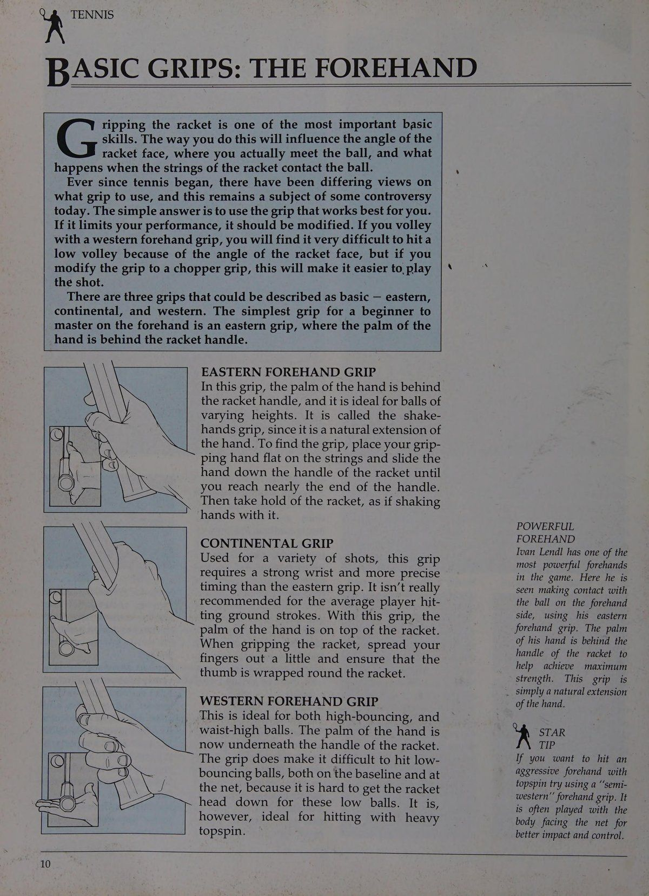
Nếu nó hạn chế hiệu suất của bạn thì nên sửa đổi. Nếu bạn bắt vô lê bằng cách cầm thuận tay kiểu Tây, bạn sẽ rất khó đánh được cú vô lê thấp do góc của mặt vợt, nhưng nếu bạn sửa đổi cách cầm thành kiểu cầm chopper, điều này sẽ giúp bạn thực hiện cú đánh dễ dàng hơn.
Có ba cách nắm có thể được mô tả là cơ bản - phía đông, lục địa và phía tây. Cách cầm vợt đơn giản nhất dành cho người mới bắt đầu thành thạo về thuận tay là kiểu cầm vợt kiểu đông, trong đó lòng bàn tay của người xé vợt là một trong những tay cơ bản quan trọng nhất nằm ở phía sau tay cầm vợt.
Cách cầm vợt thuận tay ĐÔNG Trong kiểu cầm này, lòng bàn tay nằm phía sau cán vợt và nó lý tưởng cho những quả bóng có độ cao khác nhau. Nó được gọi là kiểu cầm bắt tay vì nó là sự duỗi ra tự nhiên của bàn tay. Để tìm cách cầm vợt, hãy đặt bàn tay cầm vợt của bạn phẳng trên dây và trượt tay xuống cán vợt cho đến khi bạn chạm đến gần cuối cán vợt.
Sau đó cầm vợt như thể đang bắt tay với nó.
CONTINENTAL GRIP Được sử dụng cho nhiều cú đánh khác nhau, kiểu cầm này đòi hỏi cổ tay khỏe và căn thời gian chính xác hơn so với kiểu cầm kiểu đông. Nó không thực sự được khuyến khích cho tay vợt trung bình đánh các cú đánh trên mặt đất. Với cách cầm vợt này, lòng bàn tay sẽ nằm trên mặt vợt.
Khi cầm vợt, hãy xòe các ngón tay ra một chút và đảm bảo ngón cái được quấn quanh vợt.
TAY TAY TAY Western Kiểu này lý tưởng cho cả bóng có độ nảy cao và bóng cao đến thắt lưng. Lòng bàn tay lúc này nằm bên dưới cán vợt.
Độ bám vợt khiến việc đánh những quả bóng có độ nảy thấp trở nên khó khăn, cả trên đường biên ngang và trên lưới, vì rất khó để đưa đầu vợt hướng xuống đối với những quả bóng thấp này. Tuy nhiên, nó lý tưởng để đánh với topspin nặng.
BÊN Thuận tay MẠNH MẼ Ivan Lendl có một trong những cú thuận tay mạnh nhất trong trò chơi. Ở đây, người ta thấy anh ấy đang tiếp xúc với bóng ở phía thuận tay, sử dụng cách cầm bóng thuận tay phía đông của mình. Lòng bàn tay của anh nằm phía sau cán vợt giúp đạt được sức mạnh tối đa.
Kiểu cầm này đơn giản là sự mở rộng tự nhiên của bàn tay.
y,. MẸO SAO Nếu bạn muốn đánh một cú thuận tay mạnh mẽ với xoáy lên, hãy thử sử dụng cách cầm vợt thuận tay “'bán tây". Nó thường được chơi với tư thế cơ thể hướng vào lưới để có tác động và kiểm soát tốt hơn.
y,\ CÁCH GIẢM TENNIS CƠ BẢN: CÁC kiểu cầm vợt TRÁI (1) có thể được : \ sử dụng cho cú trái tay (Backhand Drive), tùy thuộc vào việc bạn chơi cú đánh bằng một tay hay hai tay. Thông thường, bạn nên thử bắt đầu bằng trái tay một tay, nhưng nếu bạn gặp khó khăn hoặc cảm thấy thoải mái hơn khi sử dụng hai tay thì hãy sử dụng chúng.
TRÁI MỘT TAY Đối với cú trái tay (Backhand Drive) một tay, bạn cần sử dụng cách cầm vợt cơ bản - cách cầm vợt trái tay phía đông. Cách cầm vợt này có thể được tìm thấy bằng cách xoay bàn tay của bạn một phần tư vòng vào trong từ cách cầm vợt thuận tay phía đông sao cho đốt ngón tay của bạn ở trên mặt vợt. Gót bàn tay nằm một phần ở góc xiên bên trái của vợt (nếu thuận tay phải).
Đảm bảo ngón tay cái của bạn được đặt chéo trên mặt sau của tay cầm. Đây là kiểu cầm chắc chắn vì nó cung cấp sức mạnh phía sau tay cầm nhưng cũng cho phép tạo ra một mức độ linh hoạt.
1| Stefan Edberg có một trong những cú trái tay bằng một tay hay nhất ở giải nam. Lòng bàn tay của anh ấy nằm trên tay cầm. Anh ấy đã xoay cán vợt vào trong từ cách cầm vợt thuận tay của mình. Điều này giúp cung cấp cho anh ta thêm sức mạnh đằng sau tay cầm và mức độ linh hoạt.
Đây là cách cầm vợt nhạy nhưng chắc chắn, được khuyên dùng cho tất cả những người mới bắt đầu. Ngón tay cái được đặt theo đường chéo trên vợt.
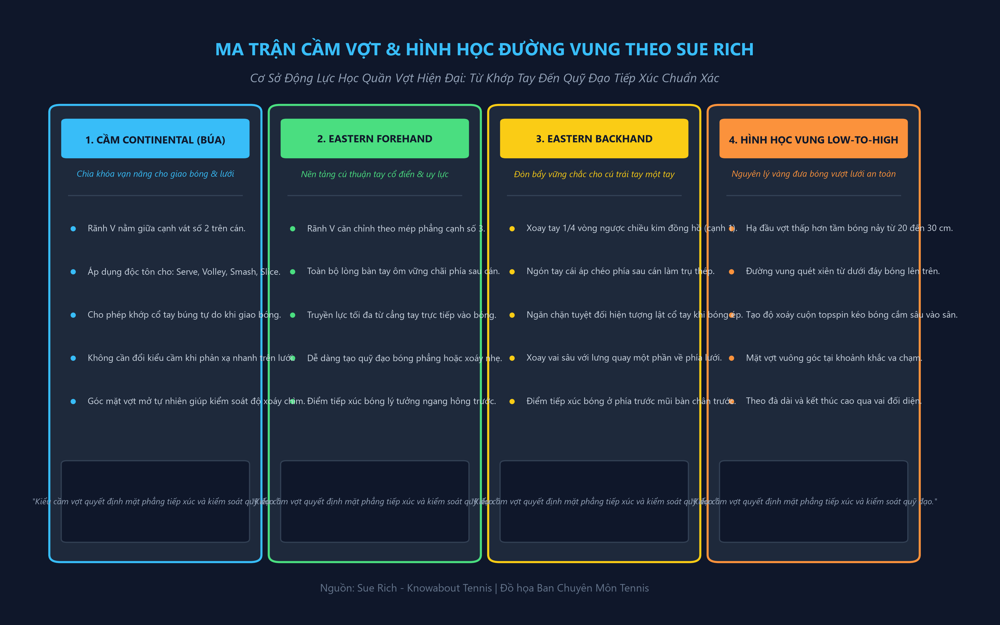
BACK HANDED NHÂN ĐÔI Cú trái tay hai tay (xem trang 14-15) rất phổ biến, đặc biệt là ở những tay vợt hàng đầu.
Chris Evert có một trong những cú trái tay (Backhand Drive) đôi tốt nhất trong trò chơi. Về mặt kỹ thuật, cô ấy có một cú sút rất tốt, đây là hình mẫu cho bất kỳ tay vợt trẻ mới chớm nở nào. Chú ý cách hai bàn tay của cô ấy: nằm cạnh nhau trên tay cầm và cách cả hai cánh tay hoạt động cùng nhau.
&
Connors, cùng với Evert, dẫn đầu về những cú trái tay hai tay (Two-Handed Backhand) vào những năm 1970. Sau đó, nhiều trẻ em bắt đầu sao chép những ngôi sao này và cú trái tay hai tay (Two-Handed Backhand) trở nên phổ biến. Ngày nay, một số tay vợt hàng đầu đã đánh cú trái tay hai tay (Two-Handed Backhand).
vy, CÁCH CẮM TENNIS CƠ BẢN: BÓNG TRÁI (2) bạn có thể gặp khó khăn khi chơi trái tay bằng một tay.
Cách dễ nhất để giải quyết vấn đề này là thêm tay còn lại của bạn vào vợt (cạnh phía đông thuận tay). Điều này chuyển cú trái tay (Backhand Drive) của bạn thành cú trái tay (Backhand Drive) bằng hai tay và làm cho cú đánh trở nên rất dễ thực hiện vì không có sự thay đổi cách cầm. Cả hai tay trái và phải đều cầm vợt bằng tay cầm thuận tay.
Ưu điểm của cú trái tay hai tay (Two-Handed Backhand) bao gồm sức mạnh lớn hơn khi sử dụng hai tay thay vì một tay (điều này đặc biệt quan trọng đối với người mới bắt đầu có thể chất yếu), đồng thời tính linh hoạt và khả năng kiểm soát cú xoay tốt hơn. Việc ngụy trang các cú đánh bằng hai tay trên vợt cũng dễ dàng hơn.
Nhược điểm lớn nhất của việc sử dụng hai tay là nó hạn chế tầm với của bạn. Bạn cần phải di chuyển nhanh quanh sân nếu chơi bằng hai tay; bạn phải đến gần bóng hơn một chút và khu vực đánh thực tế khác với cú trái tay (Backhand Drive) thông thường bằng một tay.
Hầu hết những tay vợt hàng đầu (ví dụ: Mats Wilander), sẽ sử dụng cách cầm vợt trái tay trong các cú đánh nền bằng hai tay của họ. Điều này làm cho việc đánh xoáy lên dễ dàng hơn (xem trang 44-45) và cũng có thể thực hiện cú đánh bằng một tay nếu có nhu cầu. Tuy nhiên, Jimmy Connors là một ngoại lệ đáng chú ý. Anh ta sử dụng cách cầm vợt thuận tay và do đó đánh được một quả bóng rất phẳng hoặc cắt lát.
PHONG CÁCH ĐÔI TAY 1 Người mới bắt đầu thường chơi cú trái tay hai tay (Two-Handed Backhand) sử dụng cách cầm vợt thuận tay bằng tay dưới (đây là tay gần đầu cán vợt nhất). Tay còn lại (tay trên) vừa được thêm vào vợt ở kiểu cầm vợt thuận tay. Đây là cách dễ nhất để cải thiện lối chơi trái tay của bạn.
PHONG CÁCH 2 Một số tay vợt chỉ sửa đổi cách cầm vợt bằng tay dưới, di chuyển nó một chút sang kiểu cầm vợt lục địa. Một lần nữa, tay còn lại cầm vợt bằng kiểu cầm thuận tay.
PHONG CÁCH 3 Nhiều tay vợt nâng cao thay đổi cách cầm của tay dưới thành tay trái hoàn toàn kiểu đông. Điều này làm cho việc đánh bóng bằng topspin trở nên dễ dàng hơn, điều mà nhiều tay vợt sử dụng như một hình thức chơi tấn công.
Dù bạn sử dụng kiểu cầm trái tay nào, điều quan trọng là bạn cảm thấy thoải mái với nó. Hãy suy nghĩ cẩn thận về việc lựa chọn cách cầm vợt trong luyện tập, để trong khi thi đấu, bạn có thể sử dụng cách cầm vợt đã chọn một cách tự nhiên.
MẶT BẰNG CHẬM HƠN André Agassi, người thường xuyên mặc quần jeans denim, có cú trái tay _ cú trái tay hai tay (Two-Handed Backhand) rất hiệu quả.
Hãy chú ý cách anh ta đặt cả hai tay gần nhau khi cầm vợt và cách anh ta đưa vợt trở lại dưới độ cao của quả bóng để anh ta có thể dễ dàng nhấc bóng trở lại hoặc đánh nó bằng xoáy lên. Agassi sử dụng cú trái tay hai tay (Two-Handed Backhand) của mình để đạt hiệu quả tuyệt vời, đặc biệt là trên các bề mặt chậm hơn.
y,) MẸO SAO Nếu bạn định chơi trái tay hai tay, tôi khuyên bạn nên thay đổi cách cầm sang trái tay phía đông.
Khi luyện tập, bạn cũng nên đánh một số cú đánh bằng một tay, phòng trường hợp bạn cần chúng trong trận đấu.
Chương 3: Kỹ Thuật Đánh Bóng Cuối Sân Căn Bản (Forehand & Backhand Drives)
"CÁCH ĐÁM TAY 1} Cú đánh thuận tay là cú đánh cơ bản nhất trong quần vợt, và một khi nó đã thành thạo, bạn gần như sẵn sàng chơi một trận đấu. Cách cầm vợt dễ sử dụng nhất là kiểu cầm thuận tay phía đông. Bắt đầu từ vị trí sẵn sàng — đây là vị trí mà bạn dễ dàng thoát khỏi điểm nhất để có thể vào đúng vị trí vào đúng thời điểm để đánh bóng.
Ở tư thế sẵn sàng, vợt được giơ ra phía trước cơ thể trong kiểu cầm vợt thuận tay. Nó được đỡ bởi bàn tay còn lại ở cổ họng (trừ khi dùng hai tay). Đứng hai chân rộng bằng vai, đầu gối cong và đàn hồi, trọng lượng cơ thể dồn về phía vợt. Mắt của bạn phải tập trung vào đối thủ và quả bóng.
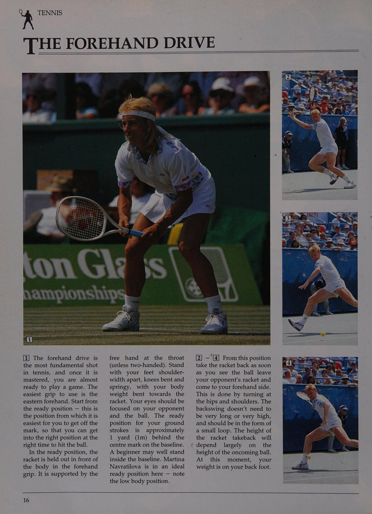
Vị trí sẵn sàng cho cú đánh tiếp đất của bạn là khoảng yard (1m) phía sau điểm giữa trên đường cuối sân.
Người mới bắt đầu có thể đứng bên trong vạch cuối sân. Martina Navratilova đang ở tư thế sẵn sàng lý tưởng ở đây - hãy lưu ý tư thế cơ thể thấp.
—'
Điều này được thực hiện bằng cách xoay hông và vai. Động tác backswing không cần quá dài hoặc quá cao mà phải ở dạng một vòng lặp nhỏ. Độ cao của việc thu vợt sẽ phụ thuộc phần lớn vào _ độ cao của quả bóng đang tới.
Lúc này, trọng lượng của bạn dồn vào chân sau.
[5] Sau đó bạn cần một sự kết nối mượt mà giữa động tác đưa vợt ra sau và động tác vung vợt tới. Động tác vung này đi từ thấp lên cao, tạo lực nâng cho bóng. Khi vợt đưa ra trước, trọng lượng cơ thể bạn được dồn sang chân trước. Vợt kết thúc ở vị trí trên cao và hướng về phía bạn muốn bóng đi. Dùng tay còn lại để giữ thăng bằng.
[6] [8] Chìa khóa để đánh một cú thuận tay tốt chính là “vùng tiếp xúc” hay “điểm tiếp xúc” với bóng. Vùng này cần nằm phía trước hông trước và ở khoảng cách thoải mái so với cơ thể. Tay cầm vợt của bạn phải rất chắc chắn tại thời điểm tiếp xúc bóng.
Giữ thăng bằng trong suốt cảnh quay.
9| —
Sẽ rất khó khăn cho một người mới bắt đầu cố gắng chú ý đến tất cả những điểm này cùng một lúc. Sẽ đơn giản hơn nhiều khi nghĩ đến TURN, STEP và SWING.
Bằng cách xoay thân vợt, vợt sẽ được thu lại. Bằng cách bước, bạn chuyển trọng lượng của mình về phía trước và bằng cách vung vợt từ thấp lên cao, bạn có thể đánh bóng.
Nếu sử dụng cách cầm vợt "bán tây", khi trọng lượng được chuyển về phía trước, tư thế sẽ ở trạng thái nửa mở (thậm chí còn mở hơn nếu sử dụng cách cầm vợt hoàn toàn kiểu tây). Vùng đánh sẽ ngang bằng với bàn chân trước nhưng vẫn cách cơ thể một khoảng thoải mái. Việc đánh những quả bóng có độ nảy cao bằng cách cầm này sẽ dễ dàng hơn nhưng lại khó khăn hơn nhiều với những quả bóng có độ nảy thấp.
U7, "THE BACKHAND DRIVE — MỘT TAY 1| Đối với người mới bắt đầu, cú trái tay (Backhand Drive) bằng một tay thường là một cú đánh khó thành thạo. Bắt đầu ở vị trí sẵn sàng (cùng vị trí bạn sử dụng với cú thuận tay).
Ngay khi bạn nhìn thấy*bóng tiến về phía trái tay của mình, hãy đổi cách cầm vợt của bạn sang kiểu trái tay phía Đông.
Sau đó xoay hông và vai sớm để có được cú xoay vai tốt cho cú trái tay (Backhand Drive). Đảm bảo rằng vợt của bạn được đỡ bằng tay còn lại khi bạn thu vợt lại. Bàn tay này chỉ rời khỏi vợt ngay trước khi va chạm.
3| Bây giờ chuyển trọng lượng của bạn lên bàn chân trước bằng cách bước vào cú đánh.
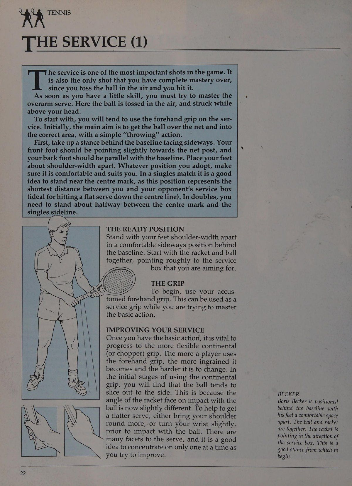
Đảm bảo bạn bước về phía trước và không song song với vạch cuối sân.
4| Động tác vung vợt sau được kết nối với động tác vung vợt về phía trước bằng một vòng nông trong động tác từ thấp đến cao, mang lại cảm giác nâng lên ở cú trái tay (Backhand Drive).
Vùng đánh hoặc điểm tiếp xúc hơi ở phía trước bàn chân dẫn đầu, lại ở một khoảng cách thoải mái so với cơ thể. Tay cầm chắc chắn khi va chạm. Như tôi đã đề cập ở phần thuận tay, người mới bắt đầu đánh bóng ở độ cao từ đầu gối đến thắt lưng sẽ dễ dàng hơn nhiều và đánh khi bóng bắt đầu rơi sau khi chạm đến đỉnh của cú nảy.
6|—
Cố gắng giữ thăng bằng trong suốt cú đánh.
Khi hoàn thành cú đánh, hãy trở lại vị trí sẵn sàng.
BACKHA 1| Cả tay vợt còn rất trẻ và thể chất nhỏ bé đều có thể thấy cú đánh này ban đầu dễ thành thạo hơn so với cú trái tay (Backhand Drive) bằng một tay, bởi vì hai tay sẽ mang lại nhiều sức mạnh hơn.
Cú đánh này có sự chuẩn bị tương tự như cú đánh bằng một tay ngoại trừ việc cả hai tay bây giờ ở cạnh nhau, trên tay cầm, như được minh họa ở đây bởi Monica Seles. Bắt đầu từ vị trí sẵn sàng. Để biết các biến thể của tay cầm, xem trang 14-15.
[2] Xoay vai và hông ngay khi bạn thấy bóng đi về phía cú trái tay.
[3] Bây giờ hãy dồn trọng lượng cơ thể về phía trước, lên chân trước. Vùng tiếp xúc khi đánh hai tay thường ngang với hông trước, nhưng cần ở khoảng cách thoải mái so với cơ thể (gần hơn một chút so với cú trái tay một tay). Nếu bạn đứng quá gần bóng, cú đánh sẽ bị bí và rất khó thực hiện động tác vung vợt đúng chuẩn.
4| &
Cánh tay không được ôm vào cơ thể, vì điều này sẽ làm ảnh bị chật.
Nếu bạn chưa quyết định nên sử dụng hai tay hay chỉ một tay, đó là một ý tưởng ND DRIVE — HAI TAY tốt để quyết định xem bạn chỉ đơn giản là sao chép một tay vợt khác hay đó là một cú đánh tự nhiên của bạn. Đừng quên rằng nếu bạn chơi bằng hai tay, bạn cần có khả năng di chuyển nhanh quanh sân.. Nếu bạn sử dụng tốt một và hai tay như nhau, hãy thử đánh giá tốc độ của bạn.
Nếu bạn không đặc biệt nhanh, bạn nên đánh bằng một tay.
Tương tự như vậy, một tay vợt không có thể lực tốt có thể đưa được nhiều bóng qua lưới hơn bằng hai tay thay vì chỉ một tay.
Mary-Joe Fernandez, á quân giải Úc mở rộng 1990, được thấy trong cảnh này đánh một cú trái tay _ bằng hai tay rất hiệu quả — một kiểu mẫu cho tay vợt thuận tay phải.
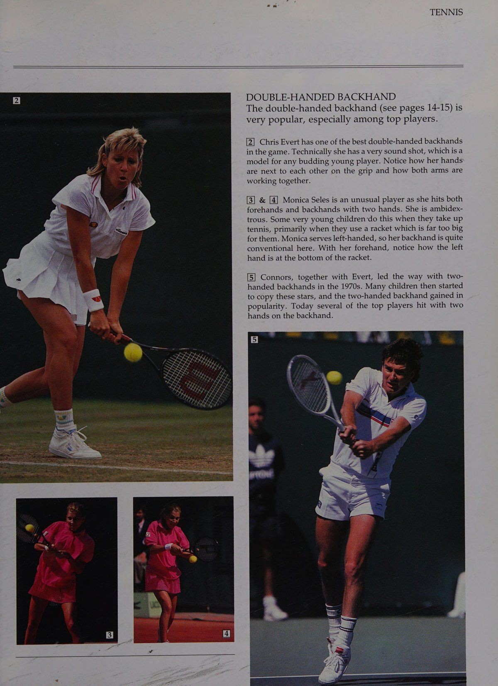
và là
Phần 2: Nghệ Thuật Khởi Tạo Giao Bóng, Phản Xạ Trả Giao & Thống Trị Mặt Lưới
Chương 4: Kỹ Thuật Giao Bóng Toàn Diện & Nhịp Tung Bóng Chuẩn Xác
KR TENNIS THE SERVICE (1) cũng là cú đánh duy nhất mà bạn hoàn toàn làm chủ được, vì bạn tung bóng lên không trung và đánh trúng nó.
Ngay khi có một chút kỹ năng, bạn phải cố gắng thành thạo cú giao bóng. Cú giao bóng này là một trong những cú đánh quan trọng nhất trong trò chơi. Nó giao bóng bằng vũ khí. Ở đây quả bóng được tung lên không trung và đánh ở phía trên đầu bạn.
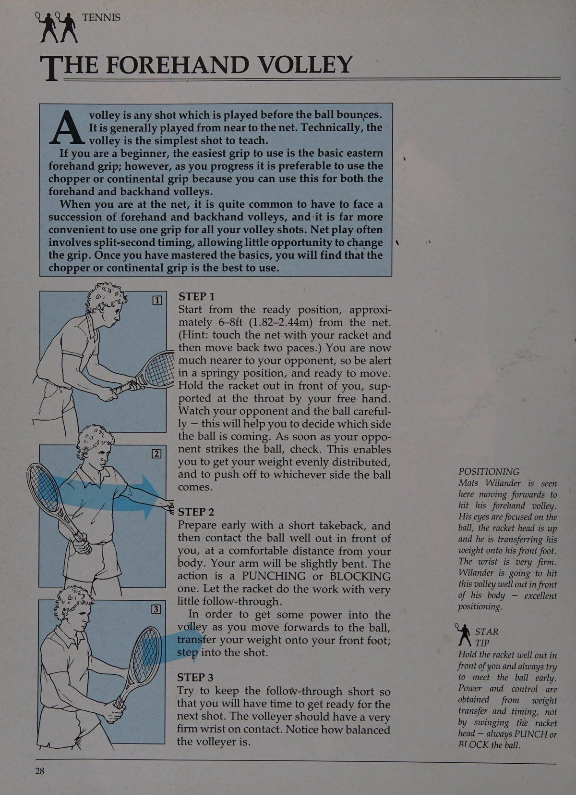
Để bắt đầu, bạn sẽ có xu hướng sử dụng cách cầm vợt thuận tay khi giao bóng. Ban đầu, mục đích chính là đưa bóng qua lưới vào đúng khu vực bằng động tác “ném” đơn giản.
Đầu tiên, đứng ở tư thế phía sau đường biên, mặt hướng sang một bên. Bàn chân trước của bạn phải hơi hướng về phía cột lưới và bàn chân sau của bạn phải song song với vạch cuối sân. Đặt hai chân rộng bằng vai. Dù bạn chọn tư thế nào, hãy đảm bảo rằng nó thoải mái và phù hợp với bạn. Trong một trận đấu đơn, bạn nên đứng gần điểm trung tâm, vì vị trí này thể hiện khoảng cách ngắn nhất giữa bạn và ô giao bóng của đối thủ (lý tưởng để thực hiện một cú giao bóng phẳng dọc theo đường giữa). Trong nội dung đánh đôi, bạn cần đứng ở khoảng giữa điểm giữa và đường biên đơn.
TƯ THẾ SẴN SÀNG Đứng hai chân rộng bằng vai trong tư thế nghiêng thoải mái sang một bên phía sau vạch cuối sân. Bắt đầu với vợt và bóng cùng nhau, chỉ đại khái vào ô giao bóng mà bạn đang hướng tới.
THE GRIP Để bắt đầu, hãy sử dụng cách cầm vợt thuận tay quen thuộc của bạn. Điều này có thể được sử dụng như một tay cầm dịch vụ trong khi bạn đang cố gắng thành thạo thao tác cơ bản.
CẢI THIỆN DỊCH VỤ CỦA BẠN Khi bạn đã có thao tác cơ bản, điều quan trọng là phải tiến tới cách cầm vợt lục địa (hoặc cắt) linh hoạt hơn. Tay vợt càng sử dụng cách cầm thuận tay nhiều thì nó càng ăn sâu và càng khó thay đổi. Trong giai đoạn đầu sử dụng cách cầm vợt kiểu lục địa, bạn sẽ thấy bóng có xu hướng bị cắt sang một bên. Điều này là do góc của mặt vợt khi tiếp xúc với bóng bây giờ hơi khác một chút. Để giúp có được cú giao bóng phẳng hơn, hãy đưa vai của bạn tròn hơn hoặc xoay nhẹ cổ tay trước khi tiếp xúc với bóng. Có nhiều khía cạnh trong cú giao bóng, và bạn chỉ nên tập trung vào một khía cạnh một lúc khi bạn cố gắng cải thiện.
BECKER Boris Becker được đặt ở vị trí phía sau đường cuối sân với hai chân cách nhau một khoảng thoải mái. Bóng và vợt ở cùng nhau. Vợt hướng về hướng ô giao bóng. Đây là một lập trường tốt để bắt đầu.
Pop cs iA THE SERVICE (2) Bắt đầu từ vị trí sẵn sàng (xem trang 22), với bóng và vợt cùng hướng về phía ô bạn đang nhắm tới. Giữ quả bóng trong tầm tay của bạn. Cố gắng bắt đầu với tư thế thoải mái, trọng lượng cơ thể hơi dồn về phía trước.
2| |4| Cả hai cánh tay phải hoạt động nhịp nhàng với nhau.
Khi vợt được lấy ra ở phía sau, cánh tay trái bắt đầu hướng lên trên và thả bóng. Cả hai cánh tay hạ xuống và đưa ra ngoài khi vai mở ra.
[5] & [6] Bóng được tung cao trên không. Tung bóng lên trên tầm với duỗi tay của bạn và đánh khi bóng đang rơi xuống sẽ dễ hơn so với việc đánh lúc bóng còn đang bay lên (động tác này đòi hỏi căn thời điểm thật chính xác và rất khó với người mới chơi). Hãy tung bóng ở khoảng cách thoải mái về phía trước và hơi lệch sang phải cơ thể (nếu bạn thuận tay phải; lệch sang trái cơ thể nếu bạn thuận tay trái).
Để ném bóng tốt, hãy cố gắng thả bóng khi cánh tay của bạn thẳng và ở phía trước cơ thể. Đừng quên: bạn không cần phải thực hiện một cú ném xấu - hãy để nó và ném bóng lên lần nữa.
[7] Vợt hạ xuống ra sau lưng. Hãy chú ý động tác khuỵu gối, để người chơi có thể dùng sức chân đẩy người lên đón bóng.
--TENNIS CHENDERIT SCHOOL MIDDLETON CHENEY Ở đây vợt đã rơi xuống mặt sau. Chú ý vị trí khuỷu tay cao.
Từ đây, đầu vợt được ''ném lên'' vào quả bóng (tất nhiên là không buông vợt!) khi tay vợt vươn người lên trên.
[9] Lúc này vợt được tung lên phía bóng. Để tạo tốc độ cho cú giao bóng, đầu vợt cần đi qua vùng tiếp xúc thật nhanh.
Bây giờ tay vợt có thể đã rời khỏi mặt đất. Nếu bạn gặp khó khăn với động tác ném, hãy thử tập ném bóng bằng tay với một quả bóng tennis cho đến khi bạn có thể ném bóng từ vạch cuối sân này sang vạch cuối sân khác. Việc tiếp xúc với bóng được thực hiện ở tầm với tối đa của tay vợt. Cổ tay chắc chắn nhưng linh hoạt.
Vợt đi theo hướng của quả bóng, kết thúc ở phía bên trái của cơ thể (đối với người thuận tay phải).
Khi vợt đi qua, tay vợt tiếp đất vào trong sân, giữ thăng bằng tốt trong suốt cú đánh. Từ đây bạn cần quay lại vị trí sẵn sàng.
Chương 5: Nghệ Thuật Trả Giao Bóng (The Return of Serve)
KA m6 "TRẢ LẠI PHỤC VỤ Việc hoàn trả dịch vụ là quan trọng thứ hai.
Mục đích chính của việc trả giao bóng (Return of Serve) là đưa bóng trở lại lưới và đưa vào cuộc. Đừng lo lắng về việc cố gắng đánh bóng: đập bóng, cắt bóng, chặn bóng - nhưng dù bạn làm gì, hãy buộc đối thủ đánh một quả bóng khác sau khi giao bóng. Sau khi lượt quay được thực hiện, bạn sẽ tăng cơ hội giành được điểm.
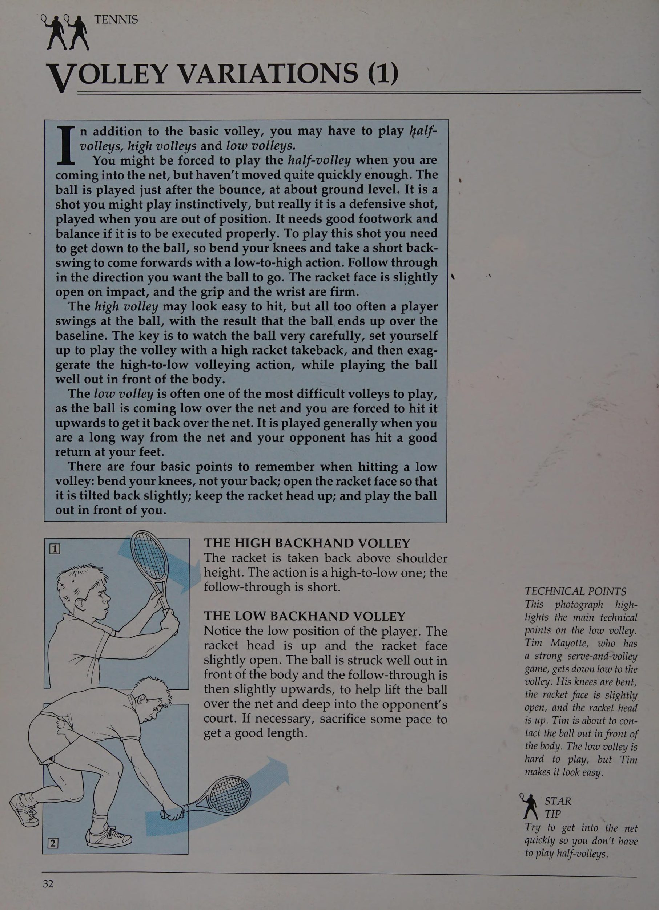
Hãy định vị bản thân một cách phù hợp để nhận lại dịch vụ. Nếu đối thủ của bạn giao bóng yếu, hãy tiến về phía trước. Nếu người giao bóng có dịch vụ mạnh, hãy lùi lại xa hơn và chặn đường quay lại. Cố gắng nhặt bóng sớm. Điều này được thực hiện bằng cách quan sát bóng một cách cẩn thận.
Cố gắng tìm manh mối về vị trí mà đối thủ của bạn sẽ giao bóng nếu quả giao bóng là cú đánh quan trọng nhất trong trò chơi, sau đó là việc quan sát người giao bóng và quả bóng trong quá trình thực hiện giao bóng.
Khi mới bắt đầu, điểm quan trọng nhất là bạn phải luôn cảnh giác. Khi người giao bóng ném bóng lên không trung, hãy sẵn sàng di chuyển.
Kiểm tra khi nào người giao bóng đánh bóng, sau đó di chuyển về phía trước để đánh trả.
a ef a) maa Đó là một VỊ TRÍ DỊCH VỤ Người giao bóng có quyền lựa chọn vị trí đặt bóng trong ô giao bóng: 1) giao bóng mạnh và phẳng xuống đường giữa (A); 2) hoặc tới vị trí (B) thẳng vào đối thủ, hoặc chém vào cơ thể đối phương; 3) hoặc đến vị trí (C), tức là cắt ra rộng (đối với người thuận tay phải).
VỊ TRÍ CỦA NGƯỜI NHẬN Người nhận giao bóng phải hết sức tập trung khi nhận giao bóng và cần đứng ở giữa góc giao giao bóng. Người giao bóng có thể đánh bóng ở bất cứ đâu giữa hai đường X và Y.
Người nhận người giao bóng B DI CHUYỂN SỚM ĐỂ CÓ BÓNG RỘNG Một trong những cú giao bóng khó nhất đối với người mới bắt đầu đánh trả là cú giao bóng cắt lát rộng hoặc cú giao bóng xoáy lên cao. Chìa khóa để trả những cú giao bóng khó này là di chuyển về phía trước và nhận bóng sớm. Nếu bạn di chuyển vào trong quả bóng, bạn sẽ có thể bắt được nó trước khi nó nảy lên cao (xoáy lên) hoặc trước khi nó cắt đi (slice).
Khi trả cú giao bóng rộng, hãy cố gắng đi theo đường đi của các mũi tên, như được hiển thị trong sơ đồ ở đây.
Một người giao bóng TRẢ LẠI PHỤC VỤ TỐT Jimmy Connors trong thời kỳ hoàng kim của ông nổi tiếng về chất lượng dịch vụ hoàn trả của ông. Anh ấy có khả năng nhặt bóng sớm và liên tục tấn công các pha trả bóng. Hãy chú ý ngay cả khi hơi nhấc khỏi mặt đất, Connors vẫn nghiêng người vào cú đánh để thực hiện cú trả bóng trái tay này.
y,\ STAR TIP Một người giao bóng tốt có thể đánh bóng theo nhiều cách khác nhau. Người nhận bóng phải linh hoạt và có khả năng đánh bóng từ nhiều vị trí khác nhau.
Bieta.
Chương 6: Kỹ Thuật Bắt Lưới Volley Toàn Diện & Cú Đập Bóng Smash
‘Cú bắt lưới (Volley) thuận tay Nó thường được chơi từ gần lưới. Về mặt kỹ thuật, cú vô lê là cú đánh đơn giản nhất để dạy.
Nếu bạn là người mới bắt đầu, cách cầm dễ sử dụng nhất là kiểu cầm thuận tay cơ bản kiểu đông; tuy nhiên, khi bạn tiến bộ hơn, bạn nên sử dụng tay cầm chopper hoặc kiểu cầm vợt số 2 (Continental / Chopper Grip) vì bạn có thể sử dụng loại này cho cả hai. cú vô lê thuận tay và trái tay.
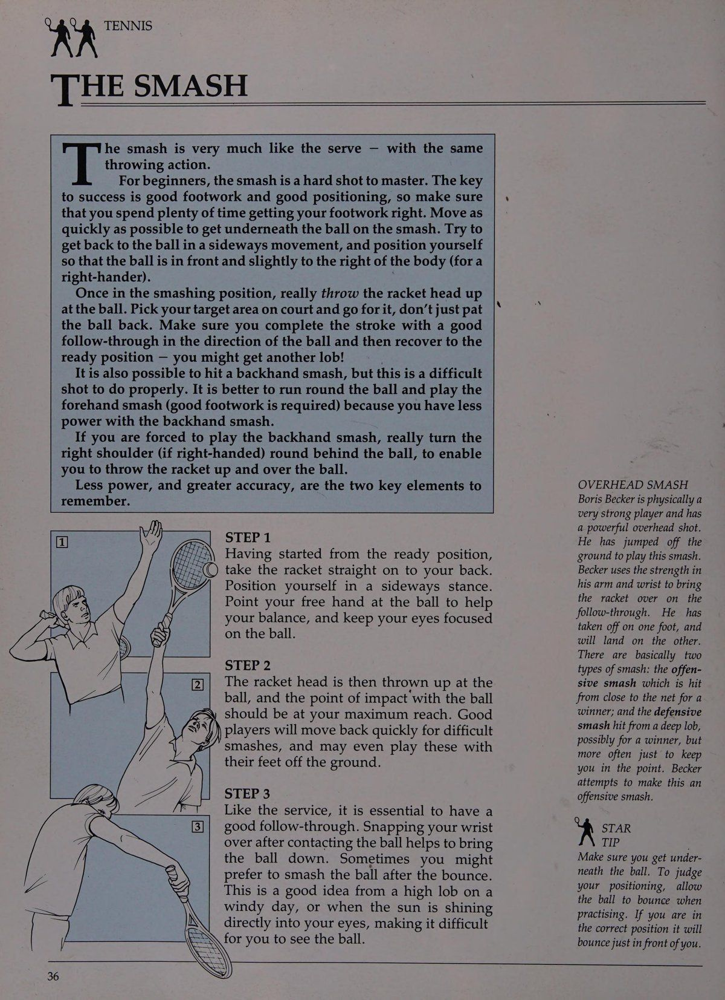
Khi bạn ở trên lưới, việc phải đối mặt với liên tiếp các cú vô lê thuận tay và trái tay là điều khá bình thường, và sẽ thuận tiện hơn nhiều khi sử dụng một tay cầm cho tất cả các cú vô lê của bạn. Chơi trên lưới thường liên quan đến thời gian trong tích tắc, cho phép có rất ít cơ hội để thay đổi cách cầm vợt. Một khi bạn đã nắm vững những điều cơ bản, bạn sẽ thấy rằng cách cầm chopper hoặc kiểu cầm lục địa là tốt nhất để sử dụng.
Cú vô lê là bất kỳ cú đánh nào được thực hiện trước khi bóng nảy lên.
BƯỚC 1 Bắt đầu từ vị trí sẵn sàng, cách lưới khoảng 6—-8ft (1,82-2,44m).
(Gợi ý: dùng vợt chạm vào lưới rồi lùi lại hai bước.) Bây giờ bạn đã ở gần đối thủ hơn rất nhiều, vì vậy hãy cảnh giác ở tư thế bật người và sẵn sàng di chuyển.
Giơ vợt ra trước mặt bạn, dùng tay còn lại đỡ ở cổ vợt.
Quan sát đối thủ và quả bóng một cách cẩn thận — điều này sẽ giúp bạn quyết định quả bóng sẽ đến từ phía nào. Ngay khi đối thủ của bạn đánh bóng, hãy kiểm tra. Điều này cho phép bạn phân bố đều trọng lượng của mình và đẩy bóng sang bất kỳ phía nào.
= BƯỚC 2 Chuẩn bị sớm bằng một cú thu bóng ngắn, sau đó tiếp xúc bóng xa trước mặt bạn, ở một khoảng cách thoải mái với cơ thể bạn. Cánh tay của bạn sẽ hơi cong. Hành động đó là Đấm hoặc CHẶN. Hãy để vợt thực hiện công việc với rất ít thao tác theo dõi.
Để có được một chút sức mạnh cho cú vô lê khi bạn di chuyển về phía trước quả bóng, hãy dồn trọng lượng của bạn lên bàn chân trước; bước vào cảnh quay.
BƯỚC 3 Cố gắng duy trì thời gian theo dõi ngắn để bạn có thời gian chuẩn bị sẵn sàng cho lần chụp tiếp theo. Người đánh vô-lê phải có cổ tay rất chắc chắn khi tiếp xúc. Chú ý độ cân bằng của cú vô lê.
ĐỊNH VỊ Mats Wilander được nhìn thấy ở đây đang di chuyển về phía trước để thực hiện cú vô lê thuận tay của mình.
Mắt anh ấy tập trung vào quả bóng, đầu vợt hướng lên trên và anh ấy chuyển trọng lượng của mình lên bàn chân trước.
Cổ tay rất chắc chắn.
Wilander sẽ thực hiện cú vô lê này ngay trước cơ thể anh ấy - chọn vị trí tuyệt vời.
* STAR LP Giữ vợt thật xa trước mặt và luôn cố gắng đón bóng sớm.
Sức mạnh và khả năng kiểm soát có được từ việc chuyển trọng lượng và tính thời gian, không phải bằng cách vung đầu vợt - luôn Đấm hoặc BI.OCK bóng.
a Benes Se too si ert Bitsy pay Sirs Saar ys A iieaieeer ep zt AQ PER ERENERER A LE SV WRWEVERATITANE MEELEERER LEGS /RURERTATALTANAY MBWAVATLILILY Bee: eng ik ae coe KR _————————“itsisCS XPHHE BACKHAND VOLE Control When Stefan Edberg giành chức vô địch nam tại Wimbledon năm 1988, anh đã chứng tỏ rằng một trong những cú đánh thành công nhất của anh là cú vô lê trái tay, Edberg thể hiện khả năng kiểm soát hoàn hảo khi bước về phía trước. Với cú vô lê trái tay này, tay trái của anh đặt ở cổ tay.
Anh ấy có khả năng chuyển trọng lượng tốt để có được sức mạnh thực hiện cú vô lê. Hãy chú ý đến sự tập trung trên khuôn mặt anh ấy khi anh ấy đánh bóng. Nếu bạn đánh những cú vô lê như thế này, bạn sẽ có rất nhiều thành công!
y,\ STAR q1P Khi đánh bóng —_ bằng một tay, luôn sử dụng tay còn lại của bạn để đỡ vợt. Tiếp tục thực hiện cú vô lê ở phía trước cơ thể của bạn.
Hãy tích cực và đi đón bóng.
Hãy nhớ rằng: cú bắt lưới (Volley) rất thú vị.
bằng hai tay. Đầu tiên, chúng ta hãy xem xét kỹ hơn về cú vô lê trái tay bằng một tay.
Bạn nên bắt đầu từ vị trí sẵn sàng với cách cầm vợt (hoặc trái tay) đã đề cập trước đó. Cú thu vợt rất ngắn (giống như cú vô lê thuận tay), nhưng lần này tay thuận hỗ trợ chỉ rời khỏi vợt ngay trước khi bóng tiếp xúc với dây vợt.
Vợt được đưa về phía trước trong hành động Đấm hoặc CHẶN. Bóng được tiếp xúc tốt ở phía trước cơ thể, ở một khoảng cách thoải mái so với một bên. Một lần nữa, sức mạnh có được bằng cách chuyển trọng lượng về phía trước, vì vậy hãy cố gắng bước vào cú đánh. Hãy nhớ giữ thời gian theo dõi ngắn để có một cú vô lê chắc chắn.
Cú vô lê cú trái tay hai tay (Two-Handed Backhand) có tác dụng tương tự như cú vô lê bằng một tay, mặc dù nhìn chung thời gian thu bóng dài hơn một chút.
Hãy cẩn thận để không vung vợt nếu bạn sử dụng hai tay. Hai bàn tay phải khép sát nhau trên tay cầm. Người mới bắt đầu có thể có thêm sức mạnh khi thực hiện cú vô lê cú trái tay hai tay (Two-Handed Backhand).
Cú vô lê trái tay có thể được thực hiện bằng một tay hoặc BƯỚC 1 Vị trí sẵn sàng - sử dụng kiểu cầm bóng hoặc tay cầm trái tay. Đối với tất cả các cú đánh, bạn cần phải cảnh giác và tỉnh táo. Điều này đặc biệt quan trọng nếu chơi gần lưới - đặc biệt là ở nội dung đánh đôi.
BƯỚC 2 Ở đây vợt được đỡ bằng tay còn lại khi nó được thu lại. Lưu ý sự rút lui ngắn. Đây là một lợi thế nếu bạn ở gần lưới và có ít thời gian chuẩn bị cho cú đánh của mình.
BƯỚC 3 Hành động sau đó là một cú đấm hoặc chặn ngắn với rất ít thao tác tiếp theo. Lưu ý trọng lượng hướng về phía trước như thế nào để tạo lực vào cú đánh. Tay cầm phải chắc chắn khi va chạm và phải duy trì sự cân bằng tốt trong suốt cú đánh. Sau khi đánh bóng, hãy nhanh chóng hồi phục về tư thế sẵn sàng cho cú đánh tiếp theo.
Ba bước thể hiện cú vô lê trái tay bằng một tay. Mặc dù bạn có thể sử dụng cú vô lê bằng hai tay nhưng nhược điểm lớn nhất là tầm với của bóng. Điều này có nghĩa là bạn cần phải di chuyển nhanh hơn và bạn cũng cần sử dụng động tác backswing dài hơn một chút. Nên chơi cú bắt lưới (Volley) bằng một tay bất cứ khi nào có thể.
OL VV BIẾN ĐỔI OLLEY (1) cú bắt lưới (Volley), cú bắt lưới (Volley) cao và cú bắt lưới (Volley) thấp.
Bạn có thể bị buộc phải thực hiện nửa cú vô lê khi vào lưới nhưng chưa di chuyển đủ nhanh. Bóng được đánh ngay sau khi nảy lên, ở độ cao ngang mặt đất. Đó là một cú đánh mà bạn có thể chơi theo bản năng, nhưng thực sự nó là một cú đánh phòng thủ, được thực hiện khi bạn ở ngoài vị trí. Nó cần động tác chân tốt và giữ thăng bằng nếu muốn thực hiện đúng cách. Để thực hiện cú đánh này, bạn cần phải cúi xuống theo bóng, vì vậy hãy uốn cong đầu gối của bạn và thực hiện một cú xoay người ngắn về phía sau để tiến về phía trước với động tác từ thấp đến cao. Thực hiện theo hướng bạn muốn bóng đi. Mặt vợt hơi mở khi va chạm, tay cầm và cổ tay chắc chắn.
Cú vô lê cao trông có vẻ dễ đánh, nhưng tay vợt thường vung vợt quá thường xuyên, dẫn đến kết quả là bóng vượt qua đường biên ngang. Điều quan trọng là phải quan sát bóng thật cẩn thận, chuẩn bị thực hiện cú vô lê với tốc độ thu vợt cao, sau đó thực hiện động tác vô-lê từ cao đến thấp, đồng thời chơi bóng tốt ở phía trước cơ thể.
Cú vô lê thấp thường là một trong những cú vô lê khó thực hiện nhất, vì bóng đi thấp qua lưới và bạn buộc phải đánh nó lên trên để đưa bóng trở lại lưới. Nó thường được chơi khi bạn ở xa lưới và đối thủ của bạn đã đánh trả tốt dưới chân bạn.
Có bốn điểm cơ bản cần nhớ khi đánh một cú vô lê thấp: cong đầu gối chứ không phải lưng; mở mặt vợt sao cho hơi nghiêng về phía sau; giữ đầu vợt hướng lên trên; và chơi bóng trước mặt bạn.
Ngoài cú vô lê cơ bản, bạn có thể phải chơi một nửa-Đoạn theo dõi BÓNG CHÁY TRÁI CAO rất ngắn.
BÓNG CHUYỂN TRÁI THẤP Vợt được đưa về phía sau cao hơn vai. Hành động từ cao đến thấp; Chú ý vị trí thấp của tay vợt. Đầu vợt hướng lên trên và mặt vợt hơi mở. Bóng được đánh ra phía trước cơ thể và theo sau là hơi hướng lên trên, giúp nâng bóng qua lưới và đi sâu vào phần sân đối phương. Nếu cần, hãy hy sinh một chút tốc độ để có được độ dài vừa phải.
ĐIỂM KỸ THUẬT Bức ảnh này _làm nổi bật các điểm kỹ thuật chính trong cú vô lê thấp.
Tim Mayotte, người có lối chơi giao bóng và vô lê mạnh mẽ, đã thực hiện cú vô lê ở mức thấp. Đầu gối của anh ta cong lại, mặt vợt hơi mở và đầu vợt hướng lên trên. Tim chuẩn bị chạm bóng ra phía trước cơ thể. Cú vô lê thấp khó thực hiện nhưng Tim lại khiến nó trông dễ dàng.
MẸO SAO Hãy cố gắng vào lưới thật nhanh để không phải thực hiện cú vô lê nửa chừng.
SNe fre BZ IESANE Se BACKHAND DRIVE VOLLEY Jimmy Connors được nhìn thấy đang bay hoàn toàn và thực hiện một cú vô lê cao ở phía sau tay. Connors thường sử dụng những cú vô lê khi vào lưới như những cú đánh tiếp cận. Ở đây anh ấy sắp chạm bóng, ngay cả khi chân anh ấy cách xa mặt đất. Hãy chú ý cách anh ấy giữ thăng bằng và đĩnh đạc ngay cả ở vị trí này cũng như cách anh ấy tập trung rõ ràng vào quả bóng. Đây là một cú đánh khó kiểm soát đối với người mới bắt đầu.
BIẾN ĐỔI BÓNG CHUYỀN (2) cú vô lê truyền động và cú vô lê lốp bóng.
Cú vô lê thả bóng tương tự như cú bỏ nhỏ (Drop Shot), ngoại trừ việc nó được thực hiện trước khi bóng nảy lên. Nói chung, nó được chơi khi bóng ở bằng hoặc thấp hơn chiều cao lưới. Cú đánh này đòi hỏi phải chạm và cảm nhận bóng rất nhiều. Bạn cần một cú backswing ngắn và giảm độ theo sau cho cú đánh này. Hãy chắc chắn rằng cổ tay của bạn vững chắc khi va chạm và mặt vợt mở để giúp truyền nhiều xoáy xuống hơn cho bóng. Cố gắng để mắt đến quả bóng, đầu hướng về phía quả bóng và uốn cong đầu gối.
Cú vô lê đôi khi được sử dụng như một cú đánh tiếp cận. Nó được đánh từ khu vực giữa sân và, như tên gọi của nó, nó là sự kết hợp giữa cú công bóng và cú vô lê, với những đặc điểm của cả hai. Sử dụng động tác vung vợt về phía sau dài hơn so với cú vô lê thông thường. Để kiểm soát cú đánh, nên đánh bóng với một chút xoáy lên.
Cú vô lê lốp bóng phổ biến ở nội dung đánh đôi hơn là đánh đơn. Nó đặc biệt hiệu quả khi cả bốn tay vợt đều có mặt trên lưới và được dùng để gây bất ngờ, buộc cặp đối phương phải rút lui về vạch cuối sân. Nó tương tự như cú lốp bóng (Lob) bóng cơ bản (xem trang 38-39), nhưng được thực hiện trước khi bóng nảy lên. Cú đánh này đòi hỏi một cú chạm tốt. Nếu chơi không tốt, nó có thể gây ra hậu quả nghiêm trọng, đặc biệt nếu nó khiến đối thủ của bạn dễ dàng đập bóng!
TL anh ấy có các biến thể khác của cú vô lê bao gồm cú vô lê thả bóng, cú vô lê thả thuận tay Nếu chơi hiệu quả, một cú vô lê tốt sẽ chạm đất ngắn phần sân đối phương (tức là. chỉ qua mạng); xoáy xuống làm cho bóng ở mức thấp. Về mặt chiến thuật, nó rất hữu ích như một yếu tố gây bất ngờ, đặc biệt nếu đối thủ của bạn đang đứng ở phía sau đường cuối sân. Tuy nhiên, đây là một cú đánh tương đối khó để thành thạo.
BÓNG CHUYỀN TAY TRƯỚC Cú đánh này có thể được sử dụng để xử lý bóng chậm, độ nảy cao khi ở gần lưới; chống bóng cao khi vào lưới; hoặc, cách khác, đưa ra yếu tố bất ngờ, bằng cách nhanh chóng di chuyển ra khỏi vạch cuối sân và không cho phép quả bóng quay trở lại nảy lên.
BÓNG CHUYỀN THUẬN TAY Cú đánh này được sử dụng chủ yếu để gây bất ngờ khi đối thủ của bạn ở rất gần lưới. Nếu chơi hiệu quả, nó có thể mở ra sân cho những cú đánh theo góc tốt hơn. Đánh bóng về phía trước, tạo cho nó đủ độ cao bằng cách mở mặt vợt và đưa bóng theo hướng đi lên.
Hành động ném KR TENNIS THE SMASH.
Đối với người mới bắt đầu, cú đập bóng là một cú đánh khó thành thạo. Chìa khóa thành công là động tác bằng chân tốt và chọn vị trí tốt, vì vậy hãy đảm bảo rằng bạn dành nhiều thời gian để thực hiện động tác bằng chân tốt. Di chuyển càng nhanh càng tốt để có được bên dưới quả bóng trong cú đập. Cố gắng lấy lại bóng theo chuyển động sang ngang và giữ vị trí sao cho bóng ở phía trước và hơi chếch về bên phải của cơ thể (lỗ của người thuận tay phải).
Khi đã ở tư thế đập bóng, hãy thực sự ném đầu vợt lên trên quả bóng. Chọn khu vực mục tiêu của bạn trên sân và thực hiện nó, đừng chỉ vỗ nhẹ vào bóng. Hãy chắc chắn rằng bạn hoàn thành cú đánh với sự theo dõi tốt theo hướng bóng và sau đó phục hồi về vị trí sẵn sàng - bạn có thể nhận được một cú lốp bóng (Lob) bóng khác!
Cũng có thể thực hiện một cú đập trái tay, nhưng đây là một cú đánh khó thực hiện đúng cách. Tốt hơn là bạn nên chạy vòng quanh quả bóng và thực hiện cú đập thuận tay (cần phải có động tác chân tốt) vì bạn có ít lực hơn với cú đập trái tay.
Nếu bạn buộc phải thực hiện cú đập trái tay, hãy thực sự xoay vai phải (nếu thuận tay phải) ra phía sau bóng, để bạn có thể ném vợt lên và qua bóng.
Ít năng lượng hơn và độ chính xác cao hơn là hai yếu tố chính cần ghi nhớ.
Te smash rất giống cú giao bóng — với cùng BƯỚC 1 A\ Sau khi bắt đầu từ vị trí sẵn sàng, ui© cầm vợt thẳng vào lưng bạn.
XAY) Hãy giữ tư thế nghiêng sang một bên.
Hướng tay còn lại của bạn vào quả bóng để giúp bạn giữ thăng bằng và tập trung mắt vào quả bóng.
BƯỚC 2 Sau đó, đầu vợt được ném lên trên quả bóng và điểm va chạm'với quả bóng phải ở tầm với tối đa của bạn. Những cú đập bóng tốt và thậm chí có thể chơi những cú đập bóng này bằng chân không chạm đất.
BƯỚC 3 Giống như dịch vụ, điều cần thiết là phải có sở thích đập bóng sau khi nảy.
Đây là một ý tưởng hay từ một cú lốp bóng (Lob) bóng cao thẳng vào mắt bạn, khiến bạn khó nhìn thấy bóng.
y))\ tay vợt sẽ lùi lại nhanh chóng để theo kịp độ khó tốt. Xoay cổ tay của bạn sau khi tiếp xúc với bóng sẽ giúp đưa bóng xuống. Đôi khi bạn có thể gặp một ngày nhiều gió hoặc khi mặt trời đang tỏa sáng. ĐẬP TRÊN ĐẦU Boris Becker là một tay vợt có thể chất rất khỏe và có những cú đánh trên cao cực mạnh.
Anh ấy đã nhảy khỏi mặt đất để thực hiện cú đập này.
Becker sử dụng sức mạnh ở cánh tay và cổ tay để đưa vợt qua trong đường chuyền tiếp theo.
Anh ta đã cất cánh bằng một chân và sẽ tiếp đất bằng chân kia.
Về cơ bản có hai kiểu đập: cú đập tấn công được thực hiện từ gần lưới dành cho người chiến thắng; và cú đập phòng thủ được thực hiện từ một cú lốp bóng (Lob) bóng sâu, có thể mang lại chiến thắng, nhưng thường chỉ để giúp bạn giữ vững quan điểm. Becker cố gắng biến điều này thành một cú đập tấn công.
y,. MẸO SAO Hãy chắc chắn rằng bạn ở bên dưới quả bóng. Để đánh giá vị trí của bạn, hãy để bóng nảy lên khi luyện tập. Nếu bạn ở đúng vị trí, nó sẽ nảy ngay trước mặt bạn.
Phần 3: Nghệ Thuật Điều Khiển Độ Xoáy, Cú Cắt Slice & Vũ Khí Lốp Bóng Tinh Tế
Chương 7: Cơ Chế Tạo Xoáy Lên (Topspin) Cú Đánh Cuối Sân & Trái Tay
KR TENNIS SỬ DỤNG SPIN TRÊN ĐẤT ĐẤT các cú trái tay (Backhand Drive), đã đến lúc xem bạn có thể thay đổi những cú đánh này như thế nào.
Một cách để làm điều này là tạo xoáy vào quả bóng. Điều này có thể là do xoáy lên - khi bạn làm cho bóng bay lên và bay cao - hoặc bằng cách cắt bóng, khi bạn làm cho bóng trượt và ở mức thấp. Bạn cũng có thể sử dụng xoáy ngang, làm cho bóng cong sang trái hoặc phải và di chuyển nó ra xa đối thủ.
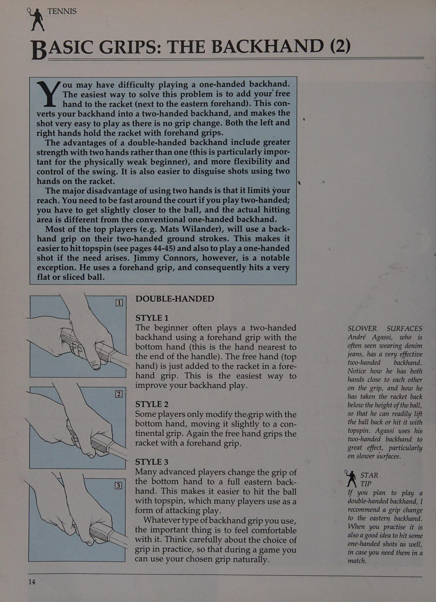
Tay vợt hiện đại có xu hướng đánh bằng xoáy lên. Quả bóng quay từ thấp đến cao theo trục thẳng đứng, gây ra lực hướng xuống khiến đường đi của quả bóng giống như vòm cầu vồng. Topspin có thể được sử dụng từ đường cuối sân, để cho phép bạn đánh bóng cao hơn lưới để đảm bảo an toàn (xoáy sẽ khiến bóng chìm xuống). Sau đó, bạn có thể thực hiện một cú đánh mạnh mẽ mà không sợ mắc lỗi, vì phần lớn sức mạnh được chuyển thành xoáy.
Topspin cũng có thể được sử dụng như một cú vô-lê. Trong trường hợp này, nó được đánh thấp hơn trên lưới. Ưu điểm là xoáy sẽ khiến bóng chìm xuống. Điều này có nghĩa là bạn có thể đánh thẳng vào chân tay vợt đang tới.
Bây giờ bạn đã nắm vững những điều cơ bản về thuận tay và BƯỚC 1 Đầu vợt xuất phát từ bên dưới quả bóng Topspin rất dễ học. Bắt đầu từ vị trí sẵn sàng. Chuẩn bị như đối với cú công bóng thuận tay thông thường, nhưng đưa đầu vợt xuống thấp hơn nhiều so với cú công bóng thuận tay thông thường, thấp hơn ít nhất 1 ft (30cm) so với điểm va chạm dự định. Chìa khóa cho một cú đánh xoáy lên thành công là vị trí xuất phát của vợt, vì vậy hãy đảm bảo rằng bạn có thể đưa vợt hướng lên trên, hướng lên trời.
BƯỚC 2 Điểm tác động Mặt vợt được đóng lại và bóng được đánh theo chuyển động từ thấp đến cao, với vợt tiếp cận vị trí thẳng đứng so với mặt đất khi va chạm. Trên thực tế, nếu bạn bắt đầu với vợt chạm đất và sau đó chỉ cần nhấc vợt lên, giữ mặt vợt thẳng đứng, quả bóng sẽ có xoáy lên trên đó.
BƯỚC 3 Thực hiện theo hướng Bạn càng muốn bóng xoáy nhiều thì vợt càng cần di chuyển theo hướng từ 6 đến 12 giờ. Thực hiện theo quả bóng với một kết thúc dài và mượt mà. Nhiều tay vợt đánh với độ xoáy lên quá cao có một cú đánh theo cực kỳ mạnh, trong đó cơ thể thực sự xoay tròn.
VÒNG TRƯỢT NẶNG Gabriela Sabatini đánh thuận tay với độ xoáy lên nặng. Cú đánh theo cực đoan này là điển hình của những tay vợt đánh với nhiều xoáy lên. Hãy chú ý cách cơ thể của cô ấy xoay tròn trong cú đánh tiếp theo và cách cú đánh được thực hiện với tư thế mở.
INSET Ở đây Mikael Pernfors cho thấy đầu vợt xuất phát từ bên dưới bóng như thế nào khi đánh bằng xoáy lên.
y,. MẸO SAO Cách cầm vợt thích hợp nhất để sử dụng cho xoáy lên nặng là kiểu cầm thuận tay bán tây hoặc tây.
Bạn sẽ thường thấy dễ dàng hơn với tư thế nửa mở.
RRA ___ SỬ DỤNG VÒNG TRƯỢT Ở BÊN TRÁI VÒNG XOAY NẶNG NẶNG Michael Chang đánh với xoáy lên nặng ở cú trái tay hai tay (Two-Handed Backhand) của anh ấy. Người ta thấy anh ta đang cầm vợt bằng cách cầm trái tay và đầu vợt hướng từ phía dưới quả bóng.
Điều này giúp anh ta dễ dàng đánh vào phía sau quả bóng và truyền độ xoáy cho tt.
y,. STAR aP Chìa khóa để có xoáy lên tốt là đưa vợt xuống thấp hơn bóng trong cú vung vợt sau.
vào cuối những năm 1970. Borg đã sử dụng cú giật bóng phi thường ở cả hai bên thuận tay và trái tay. Mặt sân chậm, đặc biệt là sân đất nện, thích hợp nhất với topspin vì độ nảy cao của chúng.
Nhiều giải đấu được diễn ra trên sân đất nện, vì vậy sẽ là khôn ngoan nếu bạn có xoáy lên trong phạm vi cú đánh của mình.
Một khi bạn đã thành thạo cú thuận tay xoáy lên, hãy thực hiện cú thuận tay (Forehand Drive) về phía trái tay. Cú đánh này được thực hiện theo cách tương tự như cú thuận tay. Trên thực tế, nếu bạn thuận tay hai tay, bạn thậm chí có thể thấy rằng nó dễ dàng hơn cú thuận tay và điều đó đến với bạn một cách tự nhiên ở bên này. Bắt đầu ở vị trí sẵn sàng và thay đổi cách cầm vợt của bạn sang trái tay hướng đông.
Ngay cả khi bạn thuận hai tay, hãy cố gắng sử dụng cách cầm vợt trái tay kiểu đông, vì cách này tốt hơn để truyền độ xoáy cho bóng.
Việc sử dụng xoáy lên tăng lên sau những thành công của Bjorn Borg BƯỚC 1 Cú giật bóng thấp hơn Một khi bạn đã nắm được cách cầm vợt trái tay kiểu đông, hãy xoay vai sớm. Ngay cả khi ban đầu bạn đưa vợt lên cao (như Becker), hãy đảm bảo rằng đầu vợt hướng xuống thấp hơn quả bóng. Vợt được hỗ trợ bằng tay còn lại khi thu bóng. Điều này giúp bạn kiểm soát tốt hơn và cũng giúp bạn nhận biết rõ hơn về mặt vợt.
BƯỚC 2 Góc của mặt vợt Chuyển trọng lượng của bạn về phía trước lên bàn chân trước khi bạn chuẩn bị tiếp xúc với bóng. Mặt vợt hơi khép lại khi va chạm, trong khi đầu vợt được đưa thẳng đứng lên phía sau quả bóng và hướng về phía trước để tạo lực. Đầu vợt càng được tăng tốc trong cú đánh thì càng đạt được nhiều sức mạnh và động lượng. Nhớ tiếp xúc bóng ở phía trước cơ thể.
BƯỚC 3 Theo dõi Theo dõi theo hướng cao và theo hướng của mục tiêu. Nếu bạn gặp khó khăn khi đánh với xoáy lên, hãy kiểm tra xem góc của mặt vợt có chính xác khi va chạm hay không (nếu quá đóng, bóng sẽ rơi xuống đáy lưới). Ngoài ra, hãy kiểm tra xem đầu vợt có đến từ phía dưới bóng không (điều này rất cần thiết nếu bạn muốn có đủ độ xoáy cuộn (Topspin) bóng); rằng bạn đang chuẩn bị đủ sớm; rằng tay cầm đúng và tư thế đứng của bạn không quá khép kín.
Chương 8: Kỹ Thuật Cắt Xoáy Slice Trái Tay & Ứng Dụng Độ Xoáy Khi Giao Bóng
RRR TENNIS 'THE SLICE BACKHAND cũng sử dụng nó ở cú thuận tay để chống lại những quả bóng có độ nảy cao hoặc như là biện pháp cuối cùng khi bị lệch khỏi vị trí. Nếu chơi phòng thủ, nó sẽ được đánh từ đường cuối sân và thường được sử dụng khi một tay vợt không ở vị trí thuận lợi để thực hiện cú trái tay tấn công. Nó cũng có thể được sử dụng một cách hiệu quả để thay đổi tốc độ và hướng của quả bóng.
Nếu bạn sử dụng lát cắt tấn công, thì nó được thực hiện như một cú đánh tiếp cận, chẳng hạn như khi đối thủ của bạn đánh một quả bóng ngắn và bạn muốn thực hiện một cú đánh và đi vào lưới. Bóng đi thấp qua lưới; khi nảy bóng sẽ ở mức thấp, buộc đối thủ của bạn phải nhấc bóng lên để đưa bóng trở lại lưới. Ngược lại, điều này sẽ giúp bạn thực hiện cú vô lê dễ dàng hơn.
Lát này khó chơi bằng hai tay vì tay thứ hai hạn chế việc theo dõi. Bạn sẽ thấy rằng nhiều tay vợt thường đánh bằng hai tay có xu hướng cắt bóng bằng một tay. Những tay vợt khác bắt đầu bằng hai tay và để tay thứ hai rơi ra trên bia, anh ta thường đánh ở phía trái tay. Một số tay vợt theo dõi.
BƯỚC 1 Thu lại lát Bắt đầu ở vị trí sẵn sàng và sau đó thay đổi cách cầm của bạn sang trái tay phía đông. Nếu bạn sử dụng cách cầm vợt thuận tay, góc của mặt vợt sẽ quá mở khi tiếp xúc và bóng sẽ bay lên không trung. Ngay khi bạn nhìn thấy bóng đến phía bên trái tay của mình, hãy xoay hông và vai và đưa vợt về phía sau cao, cao hơn mức của quả bóng đang tới.
BƯỚC 2 Tác động Giữ vững cổ tay rồi cắn vào bóng bằng một cú xoay từ cao xuống thấp. Mặt vợt sẽ hơi mở khi va chạm. Bóng được đánh ở phía trước cơ thể và ở một khoảng cách vừa phải về phía bên.
Lưu ý cách cơ thể của tay vợt nghiêng về phía trước trong cú đánh. Nếu góc của vợt quá mở khi va chạm với bóng, nó sẽ bay quá cao trong không trung; ngược lại, nếu góc quá hẹp, bóng sẽ rơi xuống đáy lưới.
BƯỚC 3 Theo dõi Việc theo dõi phải trơn tru và hướng ra phía trước cơ thể. Hãy để đà của cú đánh đưa bạn vào lưới. Để tạo ra nhiều xoáy xuống hơn và làm cho bóng trượt, bạn có thể thấy tốt hơn là sử dụng một cú đánh theo bóng rút ngắn.
BÁN LẠI CAO Zina Garrison sử dụng cú cắt của mình để tạo hiệu ứng tốt cho cú trái tay (Backhand Drive). Cô ấy có khả năng thu hồi cao và mặt vợt hơi mở. Điều này sẽ giúp cô ấy có thể tạo ra nhiều xoáy xuống vào bóng khi cô ấy vung vợt qua. Zina có vị trí cầm vợt cao bất thường, phù hợp với cách chơi của cô ấy và giúp cô ấy kiểm soát vợt nhiều hơn.
y,. MẸO SAO Nếu bạn sử dụng cú cắt bóng như một cú đánh tiếp cận, hãy cố gắng đánh bóng thẳng thay vì đánh chéo bàn (khi đó bạn sẽ dễ bị tổn thương trước bất kỳ cú vô-lê dễ dàng nào). Bạn phải đánh với độ dài vừa phải, tức là gần đường cuối sân, để buộc đối thủ của bạn thực hiện một cú đánh khó từ phía sau đường cuối sân.
oe,y,¥,\ _ SỬ DỤNG VÒNG QUAY TRÊN GIAO DỊCH — TOPSPIN topspin (hoặc cú đá) và lát. Một cú giao bóng tốt là sự kết hợp giữa tốc độ, vị trí và sự biến đổi của xoáy. Người giao bóng phải luôn để đối thủ đoán xem quả giao bóng sẽ đi đến đâu.
Đừng quên, nếu bạn tiếp tục giữ giao bóng của mình, bạn không thể thua trò chơi trừ khi hòa; điều này sẽ giữ áp lực lên đối thủ của bạn.
Topspin là kiểu giao bóng an toàn nhất để sử dụng và do đó, nó phổ biến cho các cú giao bóng thứ hai cũng như các cú giao bóng đầu tiên. Xoáy lên cũng hữu ích trên các sân chậm, có độ nảy cao, chẳng hạn như sân xi măng hoặc đất sét, nơi mặt sân tự động giảm lực của chữ T. Đây là ba kiểu giao bóng cơ bản mà bạn có thể đánh - giao bóng phẳng, giao bóng THỨ HAI. Giao bóng xoáy lên thường được sử dụng như quả giao bóng thứ hai vì đây là cú giao bóng an toàn. Nó được đánh cao hơn lưới, làm giảm khả năng giao bóng vào lưới. Độ xoáy giúp đưa bóng đi xuống, giảm cơ hội giao bóng dài.
Boris Becker được cho là đã sẵn sàng với tư thế uốn cong đầu gối tốt, sẵn sàng đánh bóng theo một__ hành động từ trái sang phải.
* MẸO SAO Trong giai đoạn học, hãy thử đặt bóng xa hơn về bên trái (nếu thuận tay phải) và hơi ra sau bạn một chút để giúp bạn truyền độ xoáy cho nó.
bắn..
Việc truyền độ xoáy cho quả bóng bằng cú giao bóng tương tự như việc sử dụng độ xoáy từ trên xuống trong các cú đánh trên mặt đất. Bạn cần học cách kết hợp các chuyển động của cơ thể và vợt.
BƯỚC 1 Vị trí đặt bóng Bắt đầu ở tư thế sẵn sàng cho cú giao bóng với kiểu cầm vợt lục địa (hoặc trái tay). Tung bóng sang trái một chút (nếu thuận tay phải).
Nếu bạn để quả bóng rơi xuống đất, nó sẽ tiếp đất hơi lệch về bên trái của bạn. Đối với người mới bắt đầu, sẽ dễ dàng hơn nếu bóng rơi ở phía sau bạn.
Khi bạn có cảm giác bóng xoáy lên, hãy đặt nó ở bên trái, nhưng ở phía trước đường cuối sân. Bạn sẽ phải cong lưng để thực hiện cú giao bóng - đặc biệt nếu bạn tung bóng hơi ra phía sau.
Một xoáy lên B phẳng BƯỚC 2 Đường vợt Sau đó, bóng được đánh từ trái sang phải.
Cách cầm kiểu lục địa hoặc trái tay giúp cổ tay linh hoạt hơn, đồng thời đảm bảo rằng mặt vợt đánh bóng theo góc chính xác để bóng xoay. Cố gắng sử dụng nhiều chuyển động của cổ tay và ném đầu vợt lên trên, xuyên qua và vượt qua quả bóng.
BƯỚC 3 Đường giao bóng bay cao trên lưới trong cú giao bóng xoáy lên, và sau đó xoáy đưa bóng xuống. Khi tiếp đất, bóng sẽ bay lên và hướng ra ngoài - gây khó khăn cho việc đánh trả, đặc biệt nếu đánh về phía trái tay của đối thủ. Anh ta sẽ phải đánh bóng cao ngang vai hoặc giao bóng từ rất sớm.
Một cú giao bóng topspin B phẳng HARE SỬ DỤNG SPIN TRÊN giao bóng — SLICE và được chơi theo cách tương tự như một cú giao bóng phẳng, ngoại trừ việc vợt bây giờ đi vòng quanh cạnh của quả bóng.
Một tay vợt thuận tay phải giao bóng từ sân bên phải (deuce) có thể khiến bóng đi chệch sang bên phải đối phương, đưa anh ta ra khỏi sân và buộc phải trả bóng yếu. Tương tự như vậy, một người thuận tay trái như Martina Navratilova, giao bóng từ phần sân bên trái (có lợi), có thể khiến bóng lao sang bên trái của đối thủ và đưa cô ấy ra khỏi sân.
Kỹ thuật này đặc biệt hiệu quả khi người thuận tay trái chơi với người thuận tay phải, vì bóng đang di chuyển ra khỏi phía trái tay của người thuận tay phải. Nó cũng có hiệu quả trên các bề mặt nhanh, chẳng hạn như 46 lát cắt anh ta có thể được sử dụng cho cú giao bóng đầu tiên hoặc cú giao bóng thứ hai, cỏ.
BƯỚC 1 Vị trí đặt bóng Bắt đầu ở tư thế sẵn sàng giao bóng với cách cầm vợt kiểu lục địa (hoặc trái tay). Nếu bạn thuận tay phải, hãy đặt bóng hơi xa về phía bên phải nhưng vẫn ở phía trước cơ thể.
Một lát B phẳng BƯỚC 2 Vị trí va chạm Quét xung quanh cạnh của quả bóng - hãy tưởng tượng bạn đang đánh qua quả bóng ở hướng 3 giờ để truyền độ xoáy cho nó. Nhiều tay vợt thấy điều này dễ dàng hơn khi cầm vợt trái tay. Hãy thử một số cú giao bóng với cách cầm kiểu lục địa và một số cú giao bóng bằng cách cầm trái tay để xem cái nào phù hợp với bạn nhất. Cơ thể của bạn xoay một cách tự nhiên khi bạn giao bóng, vì vậy hãy tận dụng điều này khi cắt bóng. Đảm bảo cổ tay của bạn khá lỏng lẻo để giúp tạo ra hành động bẻ gãy tự nhiên khi va chạm và thực hiện theo cách thông thường.
BƯỚC 3 Hiệu ứng của cú giao bóng cắt trên sân Khi bóng nảy lên, nó sẽ ở mức thấp và gãy sang một bên. Đây là một cú giao bóng tốt để sử dụng để khiến đối thủ của bạn căng ra và khi giao bóng rộng, nó có thể mở rộng sân cho một cú vô lê. Nó có thể bị tàn phá nếu có một cơn gió từ cùng hướng. Trên sân cỏ, một cú giao bóng ngắn, góc cạnh đặc biệt hữu ích nếu đối thủ của bạn ở quá xa so với đường cuối sân.
Một cú giao bóng phẳng B lát giao bóng (điều này kéo người nhận ra khỏi vị trí và mở ra khoảng trống cho cú đánh nền đầu tiên của người giao bóng) DỊCH VỤ TRƯỢT cú giao bóng mặt đất C Jimmy Connors, người thuận tay trái, có một cú giao bóng cắt lát rất hiệu quả từ phần sân bên trái khiến đối thủ của anh ta bị đẩy ra ngoài sân khi anh ta sử dụng nó với một_ người thuận tay phải.
Ở đây, Connors đang bay cao. Vợt đã rời khỏi lưng anh ta và anh ta chuẩn bị đánh bóng, lướt quanh một bên của nó và truyền độ xoáy cho nó.
7, MẸO SAO Trong giai đoạn đầu học, đặt bóng xa hơn về một bên, giúp tạo độ xoáy cho bóng dễ dàng hơn.
Chương 9: Nghệ Thuật Lốp Bóng (The Lob) & Cú Bỏ Nhỏ Tinh Tế (The Drop Shot)
THE LOB trong trò chơi, nhưng nếu chơi hiệu quả và đúng thời điểm, đó có thể là một cú đánh quyết định trận đấu. Một cú lốp bóng (Lob) bóng có thể là một cú đánh phòng thủ, được thực hiện khi bị áp lực và gặp khó khăn, hoặc một cú đánh tấn công, khi thực hiện với cú xoáy lên trước một tay vợt vô lê hung hãn.
Một cú lốp bóng (Lob) bóng phòng thủ (A) thường được thực hiện từ phía sau đường cuối sân hoặc khi bạn bị kéo ra ngoài sân để lấy bóng. Mục đích ở đây là đưa bóng lên cao để bạn có thời gian lấy lại vị trí.
Một cú lốp bóng (Lob) bóng tấn công (B) được đánh ở vị trí thấp hơn và thường là từ bên trong đường cuối sân. Mục đích là đánh bóng vừa đủ cao để nó nằm ngoài tầm với của đối thủ (cũng cho phép bạn nhảy), nhưng không quá cao để tay vợt có thời gian quay người và đuổi theo bóng.
al: cú lốp bóng (Lob) bóng của anh ấy có lẽ là cú đánh bị đánh giá thấp nhất TRÌNH TỰ CỦA CÁC CÚ ĐÚNG LOB Cú lốp bóng (Lob) bóng rất giống một cú đánh chạm, vì vậy hãy cố gắng đánh nó nhẹ nhàng lên không trung để bạn có thể kiểm soát độ cao và chiều dài mà bạn đánh bóng.
[1] TƯ THẾ SẴN SÀNG Cú lốp thuận tay được thực hiện theo cách tương tự như cú thuận tay cơ bản, với hai ngoại lệ đáng chú ý. Hãy bắt đầu từ tư thế sẵn sàng.
CHUẨN BỊ SỚM Đưa vợt về sớm, ngay khi bạn nhìn thấy bóng đi về phía thuận tay của mình.
TRÌNH TỰ LOB BACKHAND Cú lốp bóng (Lob) bóng trái tay được thực hiện theo cách tương tự.
Sử dụng cách cầm vợt trái tay cơ bản.
Vợt vung xuống dưới bóng khi va chạm, với mặt vợt mở.
Một lần nữa, tỷ lệ theo dõi lại cao.
VỢI ĐẾN PHÍA TRƯỚC Sau đó, tạo sự kết nối mượt mà giữa cú xoay về phía sau và cú xoay về phía trước.
[4] MẶT VỢT MỞ Động tác vung vợt đi từ thấp lên cao, và khi tiếp xúc bóng mặt vợt phải hơi mở.
5| ĐÁNH Ở TRƯỚC Vợt xuất phát từ bên dưới quả bóng. Bóng được đánh ở phía trước cơ thể và ở một khoảng cách thoải mái so với bên cạnh cơ thể. Trọng lượng cơ thể được chuyển về phía trước.
[6] ĐỘNG TÁC KẾT THÚC Động tác kết thúc khi đó sẽ cao hơn một chút so với cú thuận tay cơ bản thông thường.
y,) ¥, ah THE DROP SHOT ở cấp độ cơ sở, cú bỏ nhỏ (Drop Shot) có lẽ là cú đánh ít được sử dụng nhất, tuy nhiên nếu bạn chơi nó vào đúng thời điểm, bạn có thể dễ dàng giành được điểm hoàn toàn. Mục đích là đánh bóng với đủ độ xoáy xuống để khiến nó tiếp đất càng gần lưới càng tốt. Với nhiều xoáy xuống, bóng (g% sẽ chết khi chạm đất. Người mới bắt đầu nên cố gắng tập trung làm sao để bóng nảy càng gần lưới càng tốt. Các cú bỏ nhỏ (Drop Shot) có thể được đánh ở bất cứ đâu trên sân, nhưng cú đánh càng lùi về phía sau thì càng trở nên mạo hiểm.
Trừ khi bạn có khả năng chạm bóng tốt và chắc chắn ở trình độ mới bắt đầu, bạn nên thực hiện cú sút từ vị trí tấn công, trong hoặc xung quanh khu vực giao bóng.
Chìa khóa của một cú bỏ nhỏ (Drop Shot) tốt là sự đánh lừa, vì vậy hãy cố gắng chuẩn bị cho cú đánh thả bóng của bạn giống như khi bạn thực hiện một cú công bóng thuận tay hoặc trái tay thông thường, và hãy nhớ - chỉ thực hiện cú đánh thả bóng khi bạn đang di chuyển về phía bóng.
Cú thả bóng cần rất nhiều kinh nghiệm và luyện tập để hoàn thiện. Cú đánh thả bóng dễ thực hiện nhất là cú đánh dọc biên, vì bóng phải di chuyển quãng đường ngắn nhất. Đối với người mới bắt đầu, một cú bỏ nhỏ (Drop Shot) chéo sân không tốt ít nhất cũng có lợi thế là loại đối thủ ra khỏi sân, trong khi một cú bỏ nhỏ (Drop Shot) dọc biên không tốt có thể bị loại đối với người chiến thắng. Hãy vui vẻ khi thử cú bỏ nhỏ (Drop Shot).
VỊ TRÍ SẴN SÀNG CHO SÚT THỎ THUA TAY Vợt được đưa về phía sau ở độ cao ngang vai (như đối với cú công bóng thuận tay thông thường) và tay vợt bắt đầu di chuyển về phía bóng.
BACKHAND 4, THÉP SÚNG VỊ TRÍ SẴN SÀNG Một lần nữa, bắt đầu từ vị trí sẵn sàng và thay đổi cách cầm vợt của bạn sang kiểu cầm vợt trái tay kiểu đông. Đưa vợt lên cao và đỡ vợt bằng tay còn lại. Nếu ngụy trang, nó sẽ trông như thể bạn sắp cắt quả bóng.
GẶP BÓNG Sau đó, vợt đi xuống và bên dưới quả bóng với mặt vợt mở, tạo ra xoáy xuống cho bóng. Hình dạng của cú vung vợt tương tự như chữ C.
FOLLOW-THROUGH Phần tiếp theo hơi hướng lên trên. Cú bỏ nhỏ (Drop Shot) có thể được sử dụng để làm đối thủ của bạn mệt mỏi; phá vỡ nhịp điệu của đối thủ; đưa người đánh bóng vào lưới; như một yếu tố bất ngờ; hoặc chống lại cú giao bóng thứ hai yếu.
ĐIỂM TÁC ĐỘNG Bước vào quả bóng và đưa vợt xuống theo hình chữ C. Điểm va chạm ở phía trước cơ thể và mặt vợt hơi mở. Sau đó, vợt đi xuống và ở bên dưới quả bóng, tạo ra xoáy ngược cho quả bóng.
i ao v THEO-THROUGH Hãy cố gắng thực hiện một cú theo bóng tốt, với vợt kết thúc hơi hướng lên trên theo hướng mà bạn muốn bóng đi.
Trong giai đoạn đầu học, đừng lo lắng nếu bóng đi qua lưới ở một khoảng cách hợp lý — tốt hơn là bạn nên cải thiện khả năng kiểm soát xoáy xuống của mình hơn là cố gắng đưa bóng lướt qua lưới.
4l
Phần 4: Chiến Thuật Sân Đấu Thông Minh, Quản Trị Tâm Lý & Hệ Thống Tự Kiểm Tra Năng Lực
Chương 10: Chiến Thuật Thi Đấu Đơn & Phối Hợp Đánh Đôi Toàn Diện
KR TENNIS [ĐÔI - CHIẾN THUẬT ĐƠN GIẢN một phần là do trò chơi đôi mang tính hòa đồng hơn so với trò chơi đơn, một phần vì nó ít năng lượng hơn (trọng lượng được chia sẻ giữa hai bạn) và cũng vì nó mang tính kích thích, liên quan đến sự tiếp xúc, sáng tạo, trí tưởng tượng và tinh thần đồng đội.
Mục đích của trò chơi đánh đôi và cách dễ nhất để giành chiến thắng là chơi từ lưới. Đội giao bóng bắt đầu với lợi thế to lớn vì họ đã có một tay vợt trên lưới. Nếu người giao bóng thực hiện cú giao bóng của anh ta vào lưới, đội này sẽ ở thế áp đảo.
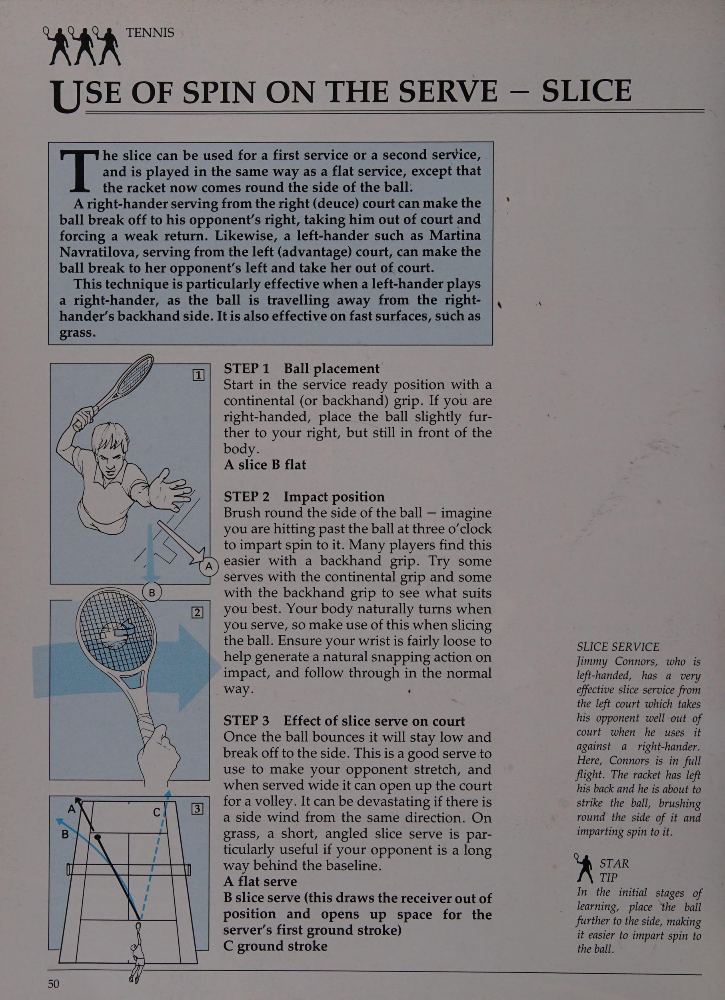
Ở cấp độ thấp, người ta thường thấy đội hình một lên, một hậu vệ và có rất nhiều pha tập hợp giữa các sân. Hãy cố gắng mạo hiểm vào lưới, vì việc giành điểm ở đó sẽ dễ dàng hơn nhiều. Một số điểm thú vị nhất diễn ra trong quần vợt là giữa hai cặp đôi tấn công - cả hai đều ở trên lưới!
Hầu hết các tay vợt ở câu lạc bộ đều chơi đánh đôi nhiều hơn đánh đơn. CÁC VỊ TRÍ CƠ BẢN CHO ĐÔI Đội hình truyền thống cho đánh đôi là với người giao bóng (A) đứng ở giữa điểm giữa và đường biên trong. Đồng đội của người giao bóng (B) đứng giữa khu vực giao bóng, trong tư thế đánh vô-lê gần lưới; người nhận bóng (C) đứng gần đường biên ngang, nhưng ở vị trí có thể bao quát được tất cả các góc có thể có của cú giao bóng; và đối tác của người nhận (D) đứng trên đường giao bóng.
PHỤC VỤ VÀ BÓNG Trong đánh đôi, rất nhiều cú giao bóng được đánh xuống đường giữa sân. Nếu bạn (A), giao bóng rộng, bạn sẽ mở rộng sân nhưng cho đối thủ một góc lớn hơn để trả bóng. Cố gắng giao bóng với tốc độ ba phần tư (1). để bạn có thời gian vào lưới (2). Người nhận bóng (C) và đối tác của anh ta (D) có quyền lựa chọn trả lại sân chéo dưới chân bạn; ở giữa sân giữa bạn và đối tác của bạn (B); xuống đường xe điện; hoặc vận động đối tác của bạn.
MỘT TÌNH HUỐNG ĐÔI ĐIỂN HÌNH Đây là một tình huống điển hình với một cặp ở lưới và cặp kia ở đường cuối sân. Cặp đôi ở đường cuối sân có quyền lựa chọn cố gắng vượt qua đối thủ hoặc cố gắng lốp bóng. Nếu cú lốp bóng (3) thành công, cặp ở lưới rút lui và cặp ở cuối sân có thể vào vị trí thuận lợi trên lưới.
TEAMWORK Đôi là về tinh thần đồng đội.
Ken Flach và Robert Seguso là một trong những cặp đôi xuất sắc nhất thế giới. Ở đây, họ được nhìn thấy song song, chuẩn bị nhận một quả giao bóng. Hãy chú ý cách cả hai tay vợt đều tập trung cao độ và quan sát đối phương. Họ đang ở vị trí nhận giao bóng tốt để tấn công. Lưu ý rằng Flach ở gần đường giao bóng trung tâm như thế nào để cố gắng đánh lạc hướng người giao bóng khỏi việc đánh xuống đường trung tâm.
STAR TP Hãy vui vẻ và cố gắng giành chiến thắng từ lưới, nhưng luôn làm việc cùng nhau như một đội.
Sis bo © es vot; seer ae ee NGHIÊN CỨU HÀNH ĐỘNG (1): PHỤC VỤ VÀ BÓNG CHUYỂN nhận thấy rằng chiến thuật giao bóng và đánh vô-lê là dành cho bạn. Nó đặc biệt thích hợp cho các bề mặt có tốc độ nhanh (chẳng hạn như trên cỏ), nơi bóng bật lại nhanh hơn và bóng có thể được đưa đi dễ dàng hơn. | .
Bạn sẽ thấy rằng rất nhiều tay vợt hàng đầu, đặc biệt là nam, giao bóng và vô lê khi họ thi đấu tại Wimbledon. Boris Becker đã vô địch Wimbledon với một số pha giao bóng và vô lê điêu luyện. Martina Navratilova cũng đã thành công rực rỡ khi sử dụng chiến thuật này. Kiểu tay vợt sử dụng kỹ thuật giao bóng và đánh vô-lê cố gắng vào lưới bất cứ khi nào có thể. Vị trí gần lưới có lợi cả về tâm lý và thể chất.
ci Một trong những chìa khóa để giao bóng và đánh vô-lê tốt là có thể thay đổi cú giao bóng của bạn bằng cách thay đổi độ xoáy - phẳng, cắt hoặc xoáy lên - và bằng cách thay đổi hướng hoặc vị trí trong ô giao bóng. Điều này có nghĩa là đối thủ của bạn không biết điều gì sẽ xảy ra và không thể bắt kịp nhịp độ trả bóng của anh ta. Bạn cần thực hiện cú giao bóng của mình vào lưới càng nhanh càng tốt, buộc đối thủ phải lao nhanh trả bóng. Cố gắng giữ thăng bằng trước khi thực hiện cú vô lê. Nếu bạn có một cú giao bóng tốt và thích thực hiện cú vô lê, bạn có thể TÁCH BƯỚC cho Bước tách đôi là chìa khóa để thực hiện cú giao bóng và cú bắt lưới (Volley) của bạn hiệu quả, ngay cả ở cấp độ mới bắt đầu. Khi vào lưới, bạn cần dừng lại trong giây lát khi người nhận bóng đánh bóng để giữ thăng bằng và phản ứng với cú trả bóng. Bạn nhảy nhẹ bằng một chân và tiếp đất bằng hai chân. Điều này cung cấp cho bạn một cơ sở để từ đó bạn có thể di chuyển sang phía thuận tay hoặc phía trái tay để thực hiện cú vô lê của mình.
ĐÚNG VỊ TRÍ Điều quan trọng là bạn phải vào đúng vị trí cho cú vô lê đầu tiên của mình. Nếu bạn giao bóng ở đường giữa sân (A), bạn sẽ chạy ở giữa sân (B). Cú giao bóng này sẽ làm giảm góc trả bóng của đối thủ và rất hữu ích trong đánh đôi.
GÓC GIỮA Nếu bạn giao bóng rộng, bạn phải đi theo đường đi của bóng, và bạn sẽ di chuyển nhẹ về phía bên của đường tâm (A) để che các góc trả bóng có thể có. Một cú giao bóng rộng sẽ mở rộng sân cho một cú vô lê dễ dàng vào khoảng trống, nhưng nó cũng sẽ mang lại cho đối thủ của bạn (B) nhiều góc để vượt qua bạn.
TRONG HÀNH ĐỘNG Pat Cash đã giành được danh hiệu nam tại Wimbledon năm 1987 với một số pha giao bóng và vô lê tuyệt vời. Anh ấy đã rất nhanh chóng thực hiện cú giao bóng của mình vào lưới. Ở đây, anh ấy đang căng cơ để thực hiện cú vô lê trái tay sau một pha trả giao bóng (Return of Serve) tốt.
INSET: Giao bóng Pat Cash.
y,. MẸO SAO.
Học hỏi từ những tay vợt hàng đầu và thử luyện tập giao bóng và đánh vô-lê.
NGHIÊN CỨU HÀNH ĐỘNG (2): CHƠI CƠ BẢN 1| Nhiều tay vợt quần vợt từ cuối sân và hiếm khi vào lưới, đặc biệt là trên mặt sân chậm hơn, nơi rất khó để đưa bóng đi vì đối thủ có nhiều thời gian hơn để đuổi theo.
Vì các cú đánh trên mặt đất là những cú đánh cơ bản, nên bạn có thể sẽ học cách chơi từ đường cuối sân trước khi giao bóng và đánh vô-lê. Một vận động viên ném bóng giỏi như Chris Evert có những cú đánh nền chắc chắn và sẽ rất ổn định, ít mắc những lỗi không đáng có. Trong một trận đấu, số điểm mất nhiều hơn số điểm thắng. Nếu có thể kiên định từ phía sau sân thì bạn sẽ gặt hái được nhiều thành công.
2| Một tay vợt ném bóng giỏi sẽ đánh bóng cách lưới khoảng 2-3ft (60-90cm) - điều này mang lại khả năng mắc lỗi cao. Những sai lầm thường mắc phải ở cấp độ mới bắt đầu khi bóng rơi vào lưới. Hãy tạo cho mình chiều cao cao hơn một chút và chơi theo tỷ lệ phần trăm (tức là cú đánh dễ hơn). Nếu bạn đánh cao hơn lưới, nó sẽ giúp bạn có được chiều dài tốt, khi đó đối thủ của bạn sẽ gặp khó khăn trong việc xử lý bóng, và nếu may mắn, bạn sẽ buộc anh ta phạm lỗi. Cố gắng đánh bóng qua lưới vào khu A và B. Khu C chỉ nên được sử dụng cho những cú vô-lê mạnh mẽ.
3| Quần vợt trên sân đất nện có thể giống như một ván cờ và các pha giao bóng có xu hướng diễn ra trong một khoảng thời gian: Một chiến thuật đơn giản thường được các tay vợt hàng đầu sử dụng là ép đối thủ của họ từ góc này sang góc kia. Mục đích là chạy đối thủ từ góc này sang góc khác cho đến khi bạn buộc anh ta ra khỏi vị trí. Trong sơ đồ, tay vợt A đánh một cú thuận tay chéo bàn về phía biên, sau đó đánh quả trả giao chéo bàn về phía trái tay.
Tay vợt B đang chạy từ bên này sang bên kia, và cuối cùng đánh một cú quay trở lại điểm C. Sau đó, tay vợt A có ba cơ hội để giành điểm: anh ta có thể đánh chéo sân đến điểm 1; đánh nhầm chân đối thủ nếu anh ta đang chạy mạnh để che cú đánh, bằng cách đánh tới điểm 2; hoặc cắt bóng ngắn và rộng đến điểm 3.
CƯỠNG SÚT TRÊN BACK HAY
Điều này mở ra sân cho tay vợt A đánh một cú trái tay sâu dọc biên (1); nếu tay vợt B đã đoán trước được điều này, anh ta có thể đánh nhầm chân anh ta bằng cách đánh một quả bóng ngắn, góc tới điểm 2. Chiến thuật này sẽ được một tay vợt cơ bản hung hãn sử dụng nhiều hơn là một tay vợt phòng thủ.
[5] Một tay vợt cuối sân giỏi không chỉ có khả năng đưa đối thủ di chuyển từ bên này sang bên kia, mà còn cả tới trước và lùi sau, để tận dụng cả…
chiều dài và chiều rộng của sân.
Đừng quên rằng đường biên có thể được sử dụng rất hiệu quả để đẩy đối thủ của bạn ra khỏi sân. Một trong những cú đánh tốt nhất nên sử dụng là cú đánh xoáy lên nhẹ nhàng vào góc ngắn (nơi đường giao bóng gặp đường biên).
Điều này thực sự khiến đối thủ của bạn phải di chuyển.
Trình tự sút: bóng ngắn tới 1; lốp bóng thành 2; sau đó bóng ngắn, góc cạnh đến 3.
[6] Bạn phải đa dạng hóa các cú đánh — sử dụng các kiểu xoáy khác nhau (xoáy lên, phẳng hoặc xoáy cắt) — và thay đổi tốc độ bóng để đối thủ không thể bắt nhịp. Một cách để làm mới lối chơi cuối sân là sử dụng cú bỏ nhỏ: nếu thực hiện đúng thời điểm, đó có thể là một cú ăn điểm trực tiếp, hoặc chí ít cũng mở toang sân cho cú đánh tiếp theo dễ dàng.
1 Os Bi Fae Tay vợt A đánh thuận tay của tay vợt B, đưa anh ta ra khỏi sân. Tay vợt B lấy bóng và đánh nó xuống vạch. Sau đó, tay vợt A đánh một cú trái tay sâu ngang sân, buộc B phải đánh vô-lê ngắn (3). Tay vợt B vẫn đang cố gắng trở lại vị trí trung tâm; vì vậy tay vợt A sau đó giả mạo một ổ cứng khác nhưng do yếu tố bất ngờ, cú bỏ nhỏ (Drop Shot) xuống còn 1 hoặc 2. Vì những cú bỏ nhỏ (Drop Shot) có thể nguy hiểm nên ban đầu chỉ thử chúng từ gần lưới. Họ có lẽ hoạt động hiệu quả nhất trong trò chơi dành cho nữ, nơi phạm vi phủ sóng của họ không quá lớn. Học hỏi từ các vì sao.
NGHIÊN CỨU HÀNH ĐỘNG (3): ĐẾN MẠNG quần vợt hiện đại có xu hướng khuyến khích những tay vợt trên toàn sân, M, những người có thể chơi cả từ đường cuối sân và trên lưới. Nếu một quả bóng rơi vào giữa sân trong một tình huống tập trung bình thường, trong quá trình thực hiện một điểm, tay vợt có một số lựa chọn: đánh một cú ghi điểm trực tiếp hoàn toàn, hoặc một quả bóng có góc ngắn, hoặc một cú bỏ nhỏ (Drop Shot), hoặc có thể là một cú đánh tiếp cận.
Đây là cú đánh tiếp cận mà bạn có thể thử ở đây. Cú đánh tiếp cận là bất kỳ cú đánh nào đưa bạn từ cuối sân ra phía trước sân vào vị trí tấn công trên lưới. Nó có thể là một cú đánh nền, một cú cắt bóng (đặc biệt hiệu quả khi bóng ở mức thấp | , r khi nảy) hoặc một cú vô lê.
tức là Một tay vợt toàn sân luôn cố gắng tấn công bóng, vì vậy anh ta sẽ di chuyển rất nhanh đến bất kỳ đường bóng ngắn nào, thực hiện cú đánh tiếp cận khi thích hợp và đi vào lưới. Việc thực hiện các cú đánh góc từ lưới sẽ dễ dàng hơn và khiến đối thủ của bạn có ít thời gian hơn để đánh trả. Tuy nhiên, hãy nhớ rằng điều quan trọng là phải kiểm soát cú đánh tiếp cận khi bạn vào lưới.
TẦM BÓNG NGẮN Mỗi tay vợt có phạm vi bóng ngắn của riêng mình - nghĩa là, bóng mà từ đó bạn có thể đưa bóng vào lưới một cách thoải mái mà không bị mắc kẹt ở giữa sân. Khi luyện tập, hãy cố gắng tìm phạm vi bóng ngắn của bạn. Yêu cầu đối tác của bạn (A) đánh những quả bóng có độ dài khác nhau để bạn (B) lao ra.
Cố gắng đạt được vị trí X.
XUỐNG DÒNG:
VOLLEY CROSS-COURT Điều quan trọng là phải thực hiện một cú đánh tiếp cận sâu, buộc đối thủ của bạn phải cố gắng vượt qua bạn từ phía sau đường cuối sân và từ một vị trí phòng thủ. Nếu bạn đánh chéo sân và đi vào, sân sẽ mở ra và điều đó giúp đối thủ của bạn thực hiện cú đánh chuyền dễ dàng hơn. Chiến thuật đơn giản là tay vợt A đánh dọc biên, vào lưới và chuyền chéo sân.
TIẾP CẬN MỘT PHẦN PHỤC VỤ THỨ HAI Kém Bạn có thể biết khi nào nên lên lưới bằng cách xem những tay vợt hàng đầu. Bạn sẽ thường thấy những điều sau đây: Tay vợt A: đánh một cú giao bóng yếu (thường là cú giao bóng thứ hai) cho tay vợt B.
Tay vợt B đánh dọc biên và theo bóng vào lưới đến vị trí X, sẵn sàng thực hiện cú vô lê. Đây là một chiến thuật rất hiệu quả nhưng đòi hỏi trình độ kỹ năng cao.
TẤN CÔNG VÀNG Chris Evert không nổi tiếng về tấn công vào lưới, nhưng ở đây người ta thấy cô ấy đang tiến vào, có lẽ là đang đuổi theo một quả bóng ngắn. Đầu vợt được đặt ngửa để sẵn sàng cho một cú đánh tiếp cận cắt lát.
y,. MẸO SAO Bạn phải tìm phạm vi bóng ngắn của riêng mình để tiếp cận lưới dễ dàng.
ôi biển tôi
Chương 11: Quản Trị Tâm Lý Sân Đấu, Cách Tính Điểm & Rèn Luyện Thể Lực
TIẾP CẬN TÂM TRÍ Khi bạn đã thành thạo các kỹ năng cơ bản của quần vợt, điều quan trọng là phải có tinh thần khỏe mạnh hoặc tinh thần dẻo dai nếu bạn muốn đạt được thành tích cao. Bạn phải suy nghĩ tích cực. Quần vợt chứa đựng nhiều bi kịch của cuộc sống - niềm vui, nỗi đau, sự thất vọng, sự bất an và sự đấu tranh - và bạn cần phải có tinh thần vững vàng để đối phó với những điều này.
Bạn cần phải có động lực nếu muốn thành công trong môn quần vợt. Mong muốn được thi đấu, tập luyện và thi đấu phải xuất phát từ bên trong. Tất cả các vận động viên thể thao vĩ đại đều có động lực cao và sở hữu sức mạnh bên trong thúc đẩy họ thực hiện theo một cách nhất định. Martina Navratilova có động lực to lớn.
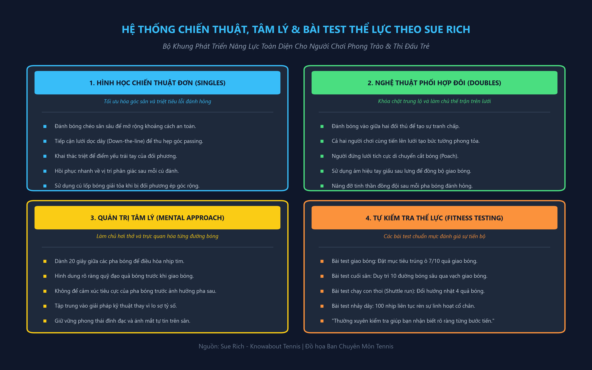
Quần vợt của bạn sẽ cải thiện đáng kể nếu bạn có khả năng tập trung vào nhiệm vụ trước mắt. Học cách tập trung là một kỹ năng có được.
Một cách đơn giản để giúp bản thân là nói “nảy” với chính mình mỗi khi bóng nảy lên và “đánh” mỗi khi bạn hoặc đối thủ của bạn đánh bóng.
Quần vợt là một trò chơi không liên tục. Cần có những đợt tập trung nhỏ để ghi điểm, nhưng cần có khoảng thời gian tập trung lâu hơn trong toàn bộ trận đấu.
Monica Seles thể hiện khả năng tập trung to lớn trong khi chờ đợi trở lại nghĩa vụ.
3] Quyết tâm là yếu tố quan trọng tạo nên một tay vợt thành công. Ivan Lendl có ý chí thành công tuyệt đối. Anh ấy đặt ra cho mình những mục tiêu và mục tiêu và làm việc chăm chỉ để đạt được những mục tiêu đó. Trên con đường đạt tới những mục tiêu này có thể có những trở ngại, nhưng chúng sẽ vượt qua được nếu bạn có đủ quyết tâm.
4| Ví dụ, bạn cần kiểm soát cảm xúc của mình khi nhận được những cuộc gọi không tốt hoặc khi điều kiện chơi không tốt. Mats Wilander rõ ràng đang rất khó chịu ở đây, nhưng anh ấy đã không dùng đến việc ném vợt. Nếu bạn cảm thấy khó chịu, một thói quen tốt nên làm theo là hít một hơi thật sâu và thở ra từ từ.
[5] Chris Evert có lẽ là ví dụ điển hình nhất về một tay vợt giữ được sự điềm tĩnh và thư thái trong suốt trận đấu. Chính vì thế bà được mệnh danh là “Trinh Nữ Băng Giá”. Bạn sẽ chơi tốt hơn khi không phải chịu đựng sự căng thẳng thần kinh. Bởi quần vợt đòi hỏi những kỹ năng vận động tinh tế, việc thả lỏng hoàn toàn và làm mềm các cơ là điều thiết yếu. Không chỉ cơ thể phải thư giãn, mà bên trong bạn cũng phải cảm thấy bình tĩnh.
6| Một số tay vợt, đặc biệt là những người có đầu óc sáng tạo, sử dụng kỹ thuật hình dung đơn giản để thi đấu tốt hơn. Điều này chỉ đơn giản liên quan đến việc sử dụng trí tưởng tượng của bạn để suy nghĩ mà không cần sử dụng từ ngữ, tạo ra những hình ảnh trong đầu bạn. Tin nhắn sau đó được gửi đến não. Những thông tin này gần giống với những thông điệp được gửi đến não trong quá trình hoạt động thể chất. Gabriela Sabatini đang nhắm mắt ngồi trên ghế ở đầu giường. Cô ấy có thể đang sử dụng kỹ thuật này.
Nhắm mắt lại và nghĩ về tay vợt yêu thích của bạn, ghi nhớ cách họ chơi một cú đánh cụ thể. Hãy tưởng tượng bạn đang thực hiện cùng một cú đánh, sau đó ra ngoài và cố gắng trở thành tay vợt đó trên sân. Thật thú vị khi làm điều này và nó có thể mang lại kết quả tốt. _ —\ fg SergioTacch (ny 7| Một nhà vô địch thực sự là người rất tự tin và Jimmy Connors cũng không ngoại lệ.
Bạn cần tin vào bản thân, vào khả năng của chính mình và tin rằng bạn đủ khả năng hoàn thành nhiệm vụ. Điều quan trọng là bạn phải có thái độ thực tế đối với hiệu suất và thừa nhận sự thật rằng đôi khi bạn sẽ thể hiện không tốt. Đừng quên rằng sự tự tin là cụ thể và không ai lúc nào cũng tự tin trong mọi tình huống.
Sự tự tin thường đến từ những trải nghiệm thành công, vì vậy nếu bạn là người mới bắt đầu chơi quần vợt, hãy nhớ: bạn đánh bóng qua lưới càng nhiều lần, bạn sẽ càng cảm thấy tự tin hơn khi chơi cú đánh đó.
8] Một tay vợt luôn phải chịu hoàn toàn trách nhiệm về hành động của mình và John McEnroe cũng không ngoại lệ. Số phận của bạn luôn nằm trong tay bạn, vì vậy nếu bạn thổi cầu chì trong một trận đấu và đập bóng xung quanh, bạn sẽ nhận được cảnh cáo hoặc điểm phạt từ trọng tài. Hãy nhớ rằng, đó là trách nhiệm của bạn.
9| Quần vợt rất thú vị và bạn phải luôn cố gắng tận hưởng việc chơi. Nếu bạn thích chơi, bạn sẽ biểu diễn, nhưng ngay khi quần vợt không còn là niềm vui nữa thì các vấn đề về thành tích chắc chắn sẽ nảy sinh. Lúc nào bạn cũng sẽ chơi tốt nếu bạn vui vẻ. Cảm giác thích thú và vui vẻ này sẽ giúp bạn giữ bình tĩnh, thư giãn và lạc quan. Cuộc đấu tranh, trận chiến và đối đầu đều có thể vui vẻ. Một đối thủ thực sự vĩ đại, như Michael Chang, yêu thích sự đấu tranh cạnh tranh cũng như cảm giác thành công.
10} Dù thắng hay thua thì quần vợt cũng chỉ là một trò chơi.
Bạn phải học cách chấp nhận thất bại một cách duyên dáng, không nổi giận. Những người thua cuộc tồi tệ sẽ than vãn, phàn nàn và bào chữa.
Họ không bao giờ nói rằng họ đã thua một trận đấu - trời quá gió, họ cảm thấy không khỏe, đối thủ của họ gặp may, có một cuộc gọi không tốt, và cứ thế.
Hãy cố gắng thừa nhận sự thật rằng có lẽ bạn đã bị ai đó giỏi hơn mình đánh bại. Ngược lại, nếu thắng, bạn cũng đừng quá kiêu ngạo hay thiếu tôn trọng đối thủ. Cảm thấy vui vẻ nhưng hãy nhớ rằng đối thủ của bạn có thể cảm thấy chán nản và thất vọng. Boris Becker thừa nhận anh đã chơi một trận đấu tuyệt vời với Henri Leconte tại đây. Phải mất hai người để làm điều này.
ĐIỂM T= hệ thống tính điểm được sử dụng trong quần vợt thường rất khó hiểu đối với người mới bắt đầu vì nó không tuân theo một khuôn mẫu logic. Hệ thống được sử dụng ngày nay có nguồn gốc từ Real Tennis, trong đó 15, 30 và 40 đều là số phút trên đồng hồ tính điểm.
Khi bắt đầu ván đấu, cả hai tay vợt đều có số điểm “yêu” (0-0). Điểm của người giao bóng luôn được gọi đầu tiên. Nếu người giao bóng thắng điểm đầu tiên, tỷ số là mười lăm tình yêu (15-0) (người giao bóng được một điểm và người nhận không có điểm). Nếu người nhận thắng ở điểm tiếp theo, điểm số sẽ là 15 tất cả (15-15). Nếu số điểm đạt đến bốn mươi điểm (40-40), thì điểm đó được gọi là 'deuce'. Tay vợt phải giành được hai điểm liên tiếp từ deuce để giành chiến thắng trong trò chơi. Nếu người giao bóng giành được điểm đầu tiên từ deuce thì điểm là “người giao bóng có lợi thế”, nếu người giao bóng giành được điểm tiếp theo thì đó là “trò chơi với người giao bóng”. tuy nhiên, nếu anh ta mất điểm tiếp theo, điểm số sẽ trở thành deuce.
Khi kết thúc ván đầu tiên, tay vợt đổi đầu. Họ làm như vậy sau mỗi trò chơi số lẻ; 1,3, 5, v.v. Nếu tỷ số cuối hiệp là 6-4, các đấu thủ đổi lượt sau ván đầu tiên của hiệp tiếp theo.
Một hiệp đấu được thắng khi một đấu thủ đạt được sáu ván đấu, ngoại trừ khi tỷ số là 5-5. Tay vợt phải có hai ván đấu rõ ràng ở phía trước để giành chiến thắng, ví dụ: 7-5, 8-6, v.v. Tuy nhiên, hầu hết các trận đấu ngày nay đều áp dụng hệ thống tie break được sử dụng khi tổng điểm đạt được trong sáu trận đấu. Điều này ngăn chặn các trận đấu rất dài xảy ra.
Hầu hết các trận đấu trong giải đấu được diễn ra đều có kết quả tốt nhất là ba set cho cả nam và nữ, mặc dù trong các giải Grand Slam (Wimbledon, Giải Mỹ mở rộng và Giải Pháp và Úc mở rộng) các trận đấu của nam là trận đấu hay nhất trong năm set. Quy tắc này không phải lúc nào cũng đúng. Trong một số giải đấu, các trận đấu sớm là trận đấu hay nhất trong ba set và trận đấu ở vòng sau là trận đấu hay nhất trong năm set.
Đúng: Nghe có vẻ đơn giản — đánh một cú mà đối thủ của bạn không thể với tới và giành được một điểm. Trên cùng bên phải: Hãy thử đánh bóng bằng cách ném vợt vào nó và bạn sẽ mất một điểm.
MỤC ĐÍCH CHÍNH Mục đích chính của quần vợt là giành được càng nhiều điểm càng tốt để bạn tích lũy được nhiều ván đấu hơn và sau đó là nhiều set hơn đối thủ và giành chiến thắng trong trận đấu. Thật không may, quần vợt là một môn thể thao bị mất nhiều điểm, nhưng bằng cách luyện tập và học hỏi từ những tay vợt hàng đầu, bạn có thể cải thiện các cú đánh nền, cú giao bóng và cú vô lê của mình. Điều này hy vọng sẽ giúp bạn giành được điểm và buộc đối thủ mắc lỗi.
ĐIỂM CHIẾN THẮNG Bạn có thể giành được điểm bằng cách: 1) đánh bóng sao cho bóng nảy hai lần trên nửa sân đối phương trước khi anh ta có thể trả bóng; 2) đánh một cú mà đối thủ của bạn không thể đạt được
Nghe thì có vẻ rất đơn giản để giành được điểm, nhưng lại càng có nhiều cách để đánh mất chúng.
ĐIỂM MẤT Điểm có thể bị mất bằng cách: 1) để bóng nảy nhiều lần trước khi trả lại; 2) đánh vô-lê khi đứng phía sau đường cuối sân và thực hiện cú trả bóng không tốt - nếu bạn thực hiện cú trả bóng tốt thì lượt đánh tiếp tục; 3) bắt bóng trước khi nó nảy lên khi đứng ngoài sân - bóng phải nảy lên trước khi đưa ra quyết định “ra ngoài”; 4) đánh vô-lê trước khi bóng đi qua lưới. (Ví dụ, ngoại lệ là vào một ngày nhiều gió khi đối thủ của bạn thực hiện cú đánh thả bóng và gió đưa bóng trở lại lưới và rơi vào phần sân của anh ta.
Trong trường hợp này, bạn được phép đưa tay qua lưới và chơi bóng, miễn là bạn không chạm vào lưới. Điều này rất khó thực hiện.) 5) ném vợt của bạn vào quả bóng để cố gắng đánh nó
Bete 6) chạm vào lưới, cột, gậy đơn, dây gỗ hoặc kim loại, dây đeo, băng hoặc mặt đất trên phần sân đối phương khi bóng đang trong cuộc; 7) chạm bóng trong cuộc hoặc chạm vào bóng bằng bất cứ thứ gì bạn mặc hoặc mang theo, ngoại trừ vợt của bạn;
Trận hòa (và sau đó là ván đấu và hiệp đấu) thuộc về tay vợt nào giành được bảy điểm đầu tiên, miễn là anh ta dẫn trước với cách biệt hai điểm, ví dụ: 7-4, 7-5. Nếu tổng số điểm đạt được sáu điểm, trò chơi sẽ được kéo dài cho đến khi một tay vợt dẫn trước hai điểm rõ ràng, ví dụ: 8-6, 9-7.
Khi điểm số đạt đến sáu ván trong một hiệp, người đến lượt giao bóng sẽ giao bóng điểm đầu tiên của hiệp đấu từ sân bên phải. Sau đó, mỗi người giao hai điểm, luân phiên giữa sân trái và sân phải cho đến khi hoàn thành hiệp đấu hòa. Các đấu thủ đổi bên sau mỗi sáu điểm và khi kết thúc hiệp đấu.
Tay vợt thường bối rối không biết sẽ đến lượt giao bóng của ai sau hiệp đấu. Hãy nhớ rằng người giao bóng đầu tiên trong loạt tie break sẽ nhận giao bóng ở game đầu tiên của set sau.
8) để bóng trong cuộc chạm đất, vật cố định hoặc vật thể khác ngoài đường giới hạn sân đối phương.
Mất điểm là một điều khó hiểu và phức tạp.
bạn có thể cần tham khảo sách quy tắc. Trên hết, hãy học cách giành điểm.
HÒA BREAK Tie break được đưa ra như một giải pháp thay thế cho việc chơi các hiệp có lợi thế và giúp giảm thời lượng của trận đấu. Năm 1969, ở vòng đầu tiên tại Wimbledon, Pan-cho Gonzales đấu với Charlie Pasarell trong một trận đấu kéo dài 5 giờ 12 phút với tỷ số 22-24, 1-6, 16-14, 6-3, 11-9 nghiêng về Gonzales. Trên thực tế, trận đấu bắt đầu vào một ngày và kết thúc vào ngày tiếp theo!
Tie break bắt đầu có hiệu lực khi tổng số điểm đạt đến sáu ván đấu và thường được chơi trong tất cả các hiệp ngoại trừ hiệp thứ ba hoặc thứ năm của một hiệp ba hoặc năm hiệp Ce Se ee Se tức là ATE ro THỂ DỤC VÀ HUẤN LUYỆN (1) Tay vợt quần vợt nghiêm túc không tăng cường thể lực khi chơi trò chơi mà tập luyện để 'phù hợp để chơi'. Các thành phần cơ bản của thể lực là tốc độ, sức chịu đựng, sự dẻo dai (hoặc tính linh hoạt) và sức mạnh. Để thành công ở cấp độ cao, bạn cũng cần có kỹ năng và tinh thần dẻo dai.
KHÔNG CÓ KỸ NĂNG BẠN KHÔNG THỂ CHƠI e KHÔNG CÓ SỨC KHỎE BẠN KHÔNG THỂ CUỐI CÙNG e KHÔNG CÓ SỨC KHỎE TINH THẦN BẠN KHÔNG THỂ THẮNG co) Cần có tốc độ để thực hiện.
chuyển động trong thời gian ngắn nhất có thể và trong quần vợt bạn cần tốc độ.
trên một khoảng cách ngắn để có thể lấy lại những quả bóng rộng, những cú bỏ nhỏ (Drop Shot), những quả bóng ngắn và sau đó: thu hồi, sẵn sàng cho cú đánh tiếp theo.
Sức chịu đựng là khả năng chịu đựng sự mệt mỏi, nhưng nó không quan trọng ở cấp độ mới bắt đầu khi các đợt tập hợp không kéo dài quá lâu! Tuy nhiên, khi kỹ năng của bạn được cải thiện, bạn cần có sức chịu đựng để duy trì mức độ thành tích của mình trong một thời gian dài, chẳng hạn như ba hoặc năm hiệp.
Sự dẻo dai là khả năng di chuyển các bộ phận của cơ thể thông qua một loạt các chuyển động. Điều này rõ ràng là cần thiết trong quần vợt. Mọi tay vợt nên khởi động và giãn cơ trước khi thi đấu, giống như cách một vận động viên giãn cơ trước khi tập luyện hoặc thi đấu. Đó là một thói quen tốt nên tập: nó giúp bạn khởi động, giảm nguy cơ chấn thương, cải thiện khả năng di chuyển của bạn quanh sân và có thể có tác dụng tâm lý hữu ích đối với đối thủ của bạn. Có một thói quen cụ thể, trong đó bạn thực hiện giãn cơ từ đầu đến chân cho tất cả các nhóm cơ chính. Cố gắng giữ mỗi vị trí trong sáu giây nhưng không nảy lên.
BÀI TẬP GIẢNG DÃ ĐƠN GIẢN Cố gắng giãn cơ trước khi thi đấu và sau một trận đấu lớn hoặc một buổi tập luyện chăm chỉ. Chấn thương thường xảy ra sau một trận đấu, khi cơ bắp của bạn bị căng cứng. Đặc biệt chú ý đến gân kheo và lưng dưới, bắp chân, háng, hông, cơ cánh tay và cơ tứ đầu (đùi). Giãn cơ thường được sử dụng như một phần trong quá trình khởi động của bạn; để tăng đáng kể phạm vi chuyển động của bạn, bạn cần! một chương trình tập luyện đầy đủ.
1] Cơ gân kheo và lưng dưới 2} Cơ tứ đầu 3] Háng — ngồi xổm với lòng bàn chân hướng vào nhau. Nhấn đầu gối xuống bằng khuỷu tay và giữ trong ít nhất sáu giây
Tốc độ phản ứng có thể được cải thiện bằng cách thực hiện các bài tập đơn giản và cố gắng giảm thời gian thực hiện.
Một ví dụ là bài tập nhặt bóng tám (xem sơ đồ ở trên). Tay vợt bắt đầu từ (A) và di chuyển đến bất kỳ trạm nào trong số tám trạm. Anh ta nhặt từng quả bóng một và trả lại vào vợt. Anh ta lặp lại bài tập này cho đến khi thu thập được hết tám quả bóng. Mục đích là để đánh bại thời gian của anh ta trong lần thử tiếp theo.
SỨC MẠNH Sức mạnh là khả năng tác dụng lực và một tay vợt quần vợt cần nó để có được sức nặng của cú đánh. Sức mạnh đặc biệt cần thiết ở lưng, chân, bụng, cánh tay trên và vai.
Sẽ là không khôn ngoan nếu một tay vợt trẻ tập tạ khi vẫn đang phát triển, mặc dù một chương trình tập luyện đơn giản chỉ liên quan đến trọng lượng cơ thể của tay vợt sẽ không gây ra bất kỳ tác hại nào.
Chống đẩy (1) sẽ giúp phát triển sức mạnh ở vai, và chống đẩy (2) sẽ giúp tăng cường cơ bụng (cơ bụng).
ĐÂY LÀ MỘT TRÒ CHƠI TUYỆT VỜI Quần vợt ngày nay là một trận đấu rất khó khăn và những tay vợt hàng đầu phải có thể lực rất tốt. John McEnroe thể hiện khả năng thể thao của mình trong pha trả giao bóng (Return of Serve) trái tay mà anh ấy đã thực hiện được khi đang ở giữa không trung. Để thực hiện cú đánh này, bạn cần có tốc độ phản ứng, sức mạnh ở chân và sự linh hoạt. Tôi không khuyên bạn nên thử cú đánh này ayeE INSET: Pat Cash lao xuống, cố gắng đánh trả.
=age9 THỂ DỤC VÀ HUẤN LUYỆN (2) CHẠY ĐÓN Để cải thiện thể lực và tốc độ của bạn quanh sân, bạn nên chạy một số bài trên sân. Một trong những bài tập đơn giản nhất về tốc độ là chạy con thoi. Mũi khoan (A) dùng để bắt đầu và dừng bóng một cách bùng nổ. Chạy nước rút từ vạch cuối sân đến vạch giao bóng và quay lại năm lần, cố gắng đổi hướng nhanh chóng. Sau đó thực hiện tương tự từ vạch cuối sân đến lưới. Một biến thể của điều này là chạy từ vạch cuối sân đến đường giao bóng, sau đó quay ngược lại vạch cuối sân. Hãy thử điều này ba lần.
Trong bài tập (B), đấu thủ bắt đầu trên đường xe điện bên ngoài và chạy để dùng tay chạm vào từng đường trên sân, mỗi lần quay lại đường xe điện. Hãy thử điều này ba lần liên tiếp. Nếu bạn lặp lại điều này nhiều lần, nó sẽ trở thành một bài tập thể lực.
2| KHOAN QUẠT Một loại bài tập (Drill) tốc độ rất hữu ích khác liên quan đến việc thay đổi hướng nhanh chóng là bài tập (Drill) quạt. Bắt đầu ở vị trí X cầm vợt của bạn và chạy đến vị trí số 1.
Chạm vào điểm nối giữa đường cuối sân và đường biên bằng chân của bạn và mặt đất phía trước bạn bằng vợt và quay trở lại vị trí trung tâm X.
Lặp lại điều này với tất cả các cơ sở khác, 2, 3, 4 và 5. Chạy ngược lại theo cả hai hướng đến cơ sở 3. Lặp lại điều này ba lần và xem mất bao lâu. Trong buổi tập tiếp theo, hãy cố gắng vượt qua lần này.
[3] BÀI TẬP CHẠY VÒNG QUANH SÂN Đây là một bài tập tốc độ xuất sắc khác. Bài tập này cũng có thể dùng để rèn sức bền nếu lặp lại nhiều lần. Hãy chạy theo lộ trình từ 1 đến 15 với tốc độ nhanh nhất có thể. Chạy lùi ở các đoạn 4-5, 6-7, 9-10, 12-13.
Chạm tay xuống đất tại mỗi điểm và chạm vào lưới ở phía trước sân.
Đừng quên đưa một số bài tập thể lực vào chương trình luyện tập của bạn để bạn có thể duy trì mức hiệu suất của mình trong các trận đấu kéo dài.
[4] ĐÁNH BÓNG CHÉO SÂN Nhiều người thấy rằng việc tập luyện mà không đánh bóng thì không mấy hứng thú, nên tôi đã đưa vào…
một số bài tập trên sân ở đây sẽ cải thiện không chỉ trình độ kỹ năng mà còn cả thể lực của bạn. Trong bài tập này, tay vợt A và B đang tập hợp trên sân tới các khu vực mục tiêu cụ thể (C).
Sau mỗi lần bắn, họ quay trở lại điểm giữa, đánh những cú đánh nền trên đường chạy. Hãy thử bài tập này trong 4 đến 5 phút; sau đó đổi bên sân và lặp lại. Nếu bạn có thể duy trì một pha tập trung và thực sự thúc đẩy bản thân quay trở lại điểm giữa sau mỗi cú đánh, bạn sẽ thấy đây là một bài tập luyện điều hòa tuyệt vời.
Mục tiêu C Tay vợt di chuyển đến điểm trung tâm sau mỗi cú đánh
Đối tác của bạn, được trang bị rổ bóng, đứng gần lưới và luân phiên đánh cho bạn những cú đánh ngắn và sâu trên mặt đất. Mục tiêu của bạn là lấy từng quả bóng và đưa nó trở lại sân.
Điều này sẽ giúp bạn tập luyện chân vất vả. Ban đầu hãy thử bài tập này với 20 quả bóng và tăng lên khoảng 50 quả.
Vì rất nhiều hoạt động luyện tập liên quan đến sự hợp tác giữa hai tay vợt, đừng quên thay đổi vai trò và cung cấp thức ăn cho đồng đội của bạn.
[6] BÀI TẬP VÔ-LÊ VÀ SMASH Bài tập cuối cùng được chọn là luyện vô-lê kết hợp smash. Bài tập này rất tốt để khuyến khích di chuyển tiến – lùi nhịp nhàng khi ở trên lưới. Nó cũng đòi hỏi độ dẻo dai cao, vì bạn sẽ phải thực sự với người để đón những quả bóng xa và cao. Người đồng đội (A) bắt đầu với một giỏ bóng ở vạch cuối sân và lần lượt tung một cú drive (1) và một cú lốp (2), để bạn đánh một cú vô-lê (3) và một cú smash (4).
Sau khi thực hiện cú đập bóng xong, hãy nhanh chóng lùi về phía lưới để có thể thực hiện cú vô lê.
Mục tiêu của bạn là đảm bảo rằng bạn không bao giờ để bóng nảy lên và bạn sẽ trả mọi quả bóng về sân. Hãy thử chụp 25 lần ban đầu và tăng dần lên 40 hoặc 50.
Luôn cố gắng thực hiện các bài tập đúng cách — khi đó bạn sẽ thu được nhiều lợi ích nhất từ chúng. Các cuộc tập trận có thể được thực hiện bởi người mới bắt đầu và các chuyên gia. Việc cho ăn phải dễ dàng đối với người mới bắt đầu, trong khi chuyên gia có thể sẽ nhắm đến các khu vực mục tiêu cụ thể trên sân. Vào cuối buổi tập, hãy hạ nhiệt bằng các bài tập tương tự như khi khởi động.
Chương 12: Hệ Thống Tự Kiểm Tra Năng Lực, Luật Thi Đấu & Bảng Thuật Ngữ
KIỂM TRA BẢN THÂN Sau khi bạn đã học được một số điều cơ bản về quần vợt, đã đến lúc xem bạn thực sự giỏi đến mức nào. Hãy thử những bài tập đơn giản này sau khi bạn đã khởi động và giãn cơ.
Lý tưởng nhất là bạn _ sẽ có một người cùng tập và một rổ ít nhất 20-30 quả bóng.
Hãy nhớ rằng, luyện tập có kế hoạch sẽ tạo nên sự hoàn hảo.
1) GIỮ ĐẾM Đối tác của bạn có thể định vị mình trên lưới (A), trên vạch giao bóng (B) hoặc gần đường biên cuối (C), trong khi bạn đứng gần đường biên cuối ở phía đối diện của lưới. Đối tác của bạn đánh hoặc ném 20 quả bóng cho bạn ở phía thuận tay, và bạn đếm xem có bao nhiêu quả bóng qua lưới và rơi xuống sân đánh đơn. Lặp lại điều này ở phía trái tay.
Lần sau hãy cố gắng vượt qua số điểm này nhé.
Khi trình độ kỹ năng của bạn tăng lên, thì khu vực mục tiêu sẽ giảm - cố gắng đánh bóng qua đường giao bóng và cuối cùng nhắm đến các khu vực mục tiêu cụ thể (D) ở sân sau.
Biến thể - điều này cũng có thể được thực hiện khi đánh các cú chạy thuận tay và trái tay. Nếu bạn bắt đầu ở điểm giữa, hãy chạy rộng và đánh bóng dọc theo vạch.
Một khi bạn đã trở nên tự tin với các cú đánh nền của mình, đặc biệt là cú thuận tay, hãy chuyển sang giao bóng để bạn có thể chơi một trò chơi.
2| BÀI tập giao bóng Cú giao bóng là một cú đánh mà bạn có toàn quyền kiểm soát - bạn tung bóng lên và đánh nó. Đây cũng là cú đánh mà bạn có thể dễ dàng tự mình thực hành. Mục đích ban đầu là giao bóng qua lưới vào ô (Y), theo đường chéo đối diện.
Hãy thử 20 quả giao bóng ở phần sân bên phải và 20 quả ở phần sân bên trái. Đếm xem có bao nhiêu quả giao bóng “tốt” và đưa bóng vào đúng khu vực. Một lần nữa, khi trình độ kỹ năng của bạn tăng lên, hãy đánh dấu các khu vực trong ô dịch vụ và nhắm đến những khu vực này.
Điểm như sơ đồ.
Khu vực A — 1 điểm Khu vực B — 2 điểm Khu vực C — 4 điểm hoạt động [2 nếu KIỂM TRA BÓNG CHUYỀN Bây giờ hãy thử một bài kiểm tra cú bắt lưới (Volley) đơn giản từ gần lưới. Một lần nữa, bạn cần một người bạn đồng hành và một rổ bóng. Nếu bạn là người mới bắt đầu, tốt nhất là đối tác của bạn nên đưa bóng bằng tay cho bạn ở độ cao ngang vai tính từ vạch giao bóng (vị trí A). Hãy thử 10 cú vô lê ở phía thuận tay và sau đó là 10 cú vô lê ở phía trái tay.
Đếm xem có bao nhiêu người vào sân đánh đơn, nhưng đừng xô ngã đối tác của bạn trong quá trình này! Nếu bạn có một đối tác giỏi, anh ta có thể đánh bóng bằng vợt từ đường cuối sân (vị trí B) để bạn lặp lại bài tập này. Nếu bạn thấy điều này quá dễ dàng, hãy cố gắng thực hiện mọi cú vô lê qua đường giao bóng hoặc thậm chí đến các khu vực mục tiêu nhỏ hơn.
[4] CÚ ĐÁNH CUỐI SÂN VÀ VÔ-LÊ Bài tập này sẽ thực sự thử thách kỹ năng của bạn, vì lúc này bạn phải liên kết các cú đánh từ cuối sân với các cú đánh ở gần lưới. Người đồng đội (A) đứng gần vạch cuối sân, lần lượt đánh một quả bóng sâu (về vị trí 1), một quả bóng giữa sân (về vị trí 2) và một quả bóng ngắn (về vị trí 3), để bạn lần lượt đánh một cú cuối sân từ vạch cuối sân, một cú tiếp cận lưới từ giữa sân và cuối cùng là một cú vô-lê từ phía trước sân. Bạn ghi một điểm cho mỗi quả bóng rơi vào sân đơn. Hãy thử 10 lượt và ghi lại số điểm của bạn trên thang 30. Để tăng độ khó, hãy cố đánh mỗi quả bóng vượt qua vạch giao bóng.
5| ĐẬP Một cú đánh khác mà bạn cần luyện tập từ gần lưới là cú đập bóng.
Bài kiểm tra này sẽ phụ thuộc phần lớn vào khả năng của đối tác của bạn và liệu anh ta có thể đưa cho bạn một cú lốp bóng (Lob) bóng hợp lý hay không.
Đối tác của bạn (A) đứng ngay sau đường cuối sân với một rổ bóng và ném 20 cú lốp bóng (Lob) bóng về phía bạn. Cố gắng đập từng quả bóng trở lại sân.
Bạn có thể thực hiện được bao nhiêu lần trong số 20 lần thử? Để làm cho nó khó khăn hơn, hãy vượt qua đường dịch vụ hoặc tới một mục tiêu cụ thể. Nếu bạn thực sự cảm thấy tràn đầy năng lượng, hãy chạy vào và chạm vào lưới sau mỗi cú đập bóng - điều này khuyến khích bạn trở lại vị trí lưới tốt sau mỗi cú đập bóng.
6| TRẢ LẠI DỊCH VỤ Bài kiểm tra cuối cùng dành cho việc hoàn trả giao bóng (Return of Serve) của bạn - bước quan trọng thứ hai trong trò chơi. Đối tác của bạn (A) giao 10 quả bóng từ sân bên phải vào khu vực X, sau đó 10 quả bóng từ sân bên trái, vào khu vực Y. Với tư cách là người trả bóng (B), mục đích chính của bạn là đưa bóng trở lại lưới vào sân. Đếm xem bạn kiếm được bao nhiêu tiền lãi. Khi bạn có thể đưa bóng qua lưới, hãy nhắm qua vạch giao bóng.
Chúc bạn vui vẻ khi thử những bài tập này.
Khi trình độ kỹ năng của bạn được cải thiện, hãy thử các lĩnh vực mục tiêu cụ thể (C).
Chú giải thuật ngữ Cú đánh tiếp cận — ép buộc các cú đánh cho phép một tay vợt tấn công vào lưới.
Đội hình của Úc được sử dụng để mô tả vị trí của các đấu thủ trong đánh đôi khi đồng đội của người giao bóng đứng cùng phía sân với người giao bóng.
Sân sau — khu vực từ đường giao bóng đến đường cuối sân Trái tay — cú đánh được thực hiện với cánh tay cầm vợt ngang người và mu bàn tay hướng về phía trước.
Xoáy xuống — bóng được đánh với độ xoáy để nó quay về phía sau.
Backswing — cú vung vợt ban đầu để chuẩn bị cho chuyển động vuốt về phía trước.
Đường cơ sở ở cuối sân.
Trò chơi vạch cuối sân — phương pháp chơi được sử dụng bởi những tay vợt ở trên hoặc gần vạch cuối sân và hiếm khi lên lưới.
Người đánh bóng ở cuối sân (đường cuối sân).
Chặn — loại hành động được sử dụng trong cú vô lê. Có rất ít sự rút lui và ít sự theo dõi.
Dấu giữa — dấu ở giữa vạch cuối sân dùng để chia đôi sân.
Đường giao bóng giữa — đường chia hai sân giao bóng làm đôi.
Bước kiểm tra di chuyển từ một chân sang tiếp đất bằng hai chân trước khi tiếp xúc với bóng — rất rõ ràng khi giao bóng và đánh vô-lê.
Cách cầm vợt (kiểu cầm vợt kiểu lục địa) — cách cầm vợt cụ thể, thường được sử dụng cho các cú vô lê và giao bóng.
Sân đất nện — loại mặt sân mà bóng nảy chậm. (Xem thêm coutt chậm.) Mặt vợt khép kín - đầu vợt nghiêng. hướng xuống dưới, dây hơi hướng xuống dưới. Được sử dụng khi đánh với topspin.
Điểm tiếp xúc — điểm mà bóng gặp dây vợt.
Hạ nhiệt để từ từ đưa cơ thể vào trạng thái nghỉ ngơi sau khi tập luyện (hay còn gọi là khởi động).
Sân — khu vực chơi quần vợt.
Cross-court — cú đánh đưa bóng đi theo đường chéo trên sân.
Cú lốp bóng (Lob) bóng phòng thủ — cú đánh thường được đánh rất cao trên không, để cho phép một đấu thủ lấy lại vị trí sân của mình.
Cú đập phòng thủ — cú đập thường được đánh từ một cú lốp bóng (Lob) bóng sâu. Có thể đánh để giành chiến thắng, nhưng thường được sử dụng chỉ để duy trì cuộc biểu tình.
Deuce — ghi điểm chẵn sau sáu điểm.
Trái tay hai tay - đánh cú trái tay hai tay (Two-Handed Backhand), sát vào cán vợt.
Đánh đôi — một trận đấu quần vợt với bốn tay vợt, hai người ở mỗi bên lưới.
Xuống dòng — song song và sát đường biên.
Khoan — phương pháp luyện tập bằng cách lặp lại các bài tập.
Drive — quả bóng được đánh sau khi nảy.
Cú vô lê — cú vô lê thường được thực hiện từ giữa sân, thường đánh bằng xoáy lên.
Cú bỏ nhỏ (Drop Shot) — cú đánh nền có nhiều xoáy xuống, để bóng nảy rất gần lưới.
Drop volley — cú vô lê được đánh với xoáy xuống để nó bay qua lưới.
‘Cán vợt trái tay kiểu phương Đông được sử dụng để đánh một cú công bóng trái tay. Được tìm thấy bằng cách xoay bàn tay một phần tư vòng vào trong từ bàn tay hướng Đông.
Tay cầm thuận tay kiểu phương Đông được sử dụng để đánh một cú công bóng thuận tay. Lòng bàn tay nằm phía sau tay cầm.
Bóng rơi — một quả bóng rơi xuống từ đỉnh điểm nảy của nó.
Bề mặt nhanh — bề mặt mà trên đó bóng sẽ bật lại nhanh chóng, ví dụ: cỏ.
Thể lực — khả năng thi đấu của một tay vợt. Một thuật ngữ chung để bao gồm sức mạnh, tốc độ, sức chịu đựng và sự dẻo dai.
Giao bóng phẳng — một cú giao bóng mạnh mà không có xoáy lên.
Tính linh hoạt — khả năng di chuyển các bộ phận của cơ thể thông qua nhiều chuyển động.
Quay trở lại nổi — một lượt quay lại không có nhiều tốc độ...
Theo dõi — đường đi của vợt sau khi đánh bóng.
Thuận tay — cú đánh được thực hiện với lòng bàn tay hướng về phía trước.
Sân trước — khu vực giữa đường giao bóng và lưới.
Trò chơi — đơn vị tính điểm khi một tay vợt giành được bốn điểm, hoặc giành được hai điểm liên tiếp từ deuce.
Grand slam — tên được đặt cho bốn giải đấu lớn: Giải Pháp mở rộng, Wimbledon, Giải Mỹ mở rộng và Giải vô địch Úc mở rộng.
Grip — phương pháp cầm vợt. Cũng bao gồm các tay cầm vợt.
Cú chạm đất — _ cú đánh dùng để đánh bóng sau khi nó nảy lên.
Tên chung của các cú công bóng thuận tay và trái tay.
Half-volley — cú đánh được thực hiện ngay sau khi bóng rời khỏi mặt đất.
Cú vô lê cao — cú vô lê chơi tốt trên độ cao ngang vai.
Left Court (Sân thuận lợi) — tên được đặt cho phía bên trái của sân.
Lift — thuật ngữ dùng để mô tả đường đi của bóng ở cú trái tay (khi bóng được đánh ở độ cao cao để đưa nó qua lưới).
Lob — quả bóng được đánh lên cao.
Lob volley — cú vô lê đánh cao qua đầu đối phương khi ở trên lưới.
Cú vô lê thấp — cú vô lê được thực hiện khi bóng bay thấp qua lưới, buộc tay vợt phải cúi xuống.
Trận đấu — _ số set được xác định trước sẽ quyết định người chiến thắng. Nữ chơi hay nhất trong ba set; nam chơi bộ hay nhất trong ba bộ hoặc bộ hay nhất trong năm bộ.
Tinh thần dẻo dai — để kiểm soát nội tâm của bạn.
Giữa sân -— _ xung quanh đường giao bóng.
khu vực Trận đấu trên lưới — đề cập đến tất cả các cú đánh được thực hiện gần lưới.
Lốp bóng tấn công — bóng được đánh lên trên, ngay ngoài tầm với của đối phương, thường là với xoáy lên.
Cú đập bóng tấn công qua đầu, thường được đánh từ gần lưới để giành chiến thắng.
Mặt vợt mở — đầu vợt hơi nghiêng lên trên, với các dây hướng lên trên.
Thế đứng mở — tay vợt ở vị trí quay mặt vào lưới, thường được sử dụng khi đánh các cú công bóng xoáy lên.
Overhead — một tên gọi khác của cú đập bóng. Cú đánh bằng vợt ở trên đầu.
Cú đánh vô-lê — một cú đánh đưa bóng vượt qua một đối thủ thường ở trên hoặc đến gần lưới.
Tỷ lệ cú đánh — đánh cú đánh có nhiều khả năng mang lại thành công nhất cho bạn.
Các thiết bị cố định bao gồm lưới, cột, gậy đơn, dây hoặc cáp kim loại, dây đeo và băng, vật chặn phía sau và bên hông, giá đỡ, ghế và ghế cố định hoặc có thể di chuyển xung quanh sân và những người ngồi trong đó, tất cả các đồ đạc cố định khác xung quanh và phía trên sân; cũng như Trọng tài chính, Trọng tài sân lưới, Trọng tài lỗi chân, trọng tài biên và người nhặt bóng khi ở vị trí tương ứng của họ.
Place up (tung) — phương pháp đưa bóng lên không trung khi giao bóng.
Điểm va chạm — điểm mà tại đó vợt gặp bóng.
Cú đấm — hành động dùng vợt được sử dụng trong cú vô lê.
Tập hợp — một loạt các cú đánh trên mặt đất.
Vị trí sẵn sàng -— vị trí mà tay vợt bắt đầu, trước khi tiếp xúc hoặc di chuyển tới bóng.
Người nhận — tay vợt nhận giao bóng.
Trả lại quả giao bóng — cú đánh được sử dụng để trả lại quả giao bóng.
Right Court (deuce Court) — tên được đặt cho phía bên phải của sân (thường đề cập đến ô giao bóng).
Cách cầm vợt kiểu bán tây — cách cầm vợt dùng để đánh cú công bóng thuận tay.
Giao bóng vô lê -—_ cách chơi đơn giản. Người giao bóng thực hiện cú giao bóng vào lưới để thực hiện cú vô lê.
Máy chủ — tay vợt đưa bóng vào cuộc.
Giao bóng — hành động đưa bóng vào cuộc.
Khu vực ô giao bóng mà người giao bóng hướng bóng vào.
Đặt đơn vị tính điểm theo đó một tay vợt đã thắng sáu trận, nhưng phải thắng cách biệt hai trận, ví dụ:
7/5, 8/6 hoặc trong trường hợp hòa 7/6.
Bóng ngắn — bóng chạm gần lưới hoặc ở giữa sân.
Phạm vi bóng ngắn — quả bóng mà từ đó tay vợt có thể vào lưới một cách thoải mái mà không bị mắc kẹt ở giữa sân.
Quần vợt ngắn — phiên bản thu nhỏ của quần vợt, chơi trên sân cỡ cầu lông, thường có _ vợt nhựa và bóng xốp (trong nhà) và lưới thấp.
Chạy con thoi — di chuyển tới lui giữa hai địa điểm.
BẢN THUẬT NGỮ TAAL > Đường biên — các đường ở hai bên sân đánh dấu ranh giới của khu vực thi đấu.
Đơn — trận đấu diễn ra một chọi một.
Gậy đơn — trụ dùng để: đỡ lưới khi đánh đơn trên sân đôi với a.
lưới đôi: Các cột được đặt cách 3ft (0,91m) bên ngoài sân đánh đơn ở mỗi bên.
Slice — cú đánh có độ xoáy ngang.
Bề mặt sân chậm, trên đó bóng bật lại chậm — thích hợp cho lối chơi cơ bản. (Xem thêm sân đất nện.) Đập (trên đầu) — cú đánh bằng vợt ở trên đầu.
Tốc độ — khả năng đi được một quãng đường trong thời gian ngắn nhất có thể.
Spin — xoay quả bóng trong chuyến bay.
Tách bước — thuật ngữ dùng để chỉ việc nhảy bằng một chân và nhảy lên hai chân để giữ thăng bằng.
Sức chịu đựng — khả năng chịu đựng sự mệt mỏi.
Stance — vị trí của một tay vợt khi chuẩn bị đánh bóng.
Sức mạnh — khả năng tác dụng lực.
Tính dẻo dai có khả năng di chuyển các bộ phận của cơ thể thông qua một loạt các chuyển động.
Swing — đường đi của vợt trên các cú đánh trên mặt đất.
Chiến thuật — phương pháp được sử dụng để thực hiện kế hoạch trò chơi.
Phương pháp thu hồi vợt để di chuyển vợt ra khỏi cơ thể theo nhiều cú đánh khác nhau.
Kỹ thuật thực hiện cú đánh.
Đường xe điện — khoảng trống giữa đường biên đơn và đường biên đôi.
Họng vợt — trục vợt, phần nằm giữa đầu vợt và cán vợt.
. Hành động ném - đường đi của vợt trên quả giao bóng và đập bóng.
Tie-break — hệ thống tính điểm có thể được sử dụng khi điểm số đạt đến cả sáu ván đấu, như một giải pháp thay thế cho bộ lợi thế.
Topspin — bóng xoay về phía trước.
Tung (đặt lên) — phương pháp đưa bóng lên không trung để bắt đầu giao bóng.
Cú đánh cú trái tay hai tay (Two-Handed Backhand), hai tay đặt trên cán vợt.
Hình dung — quá trình tạo ra những hình ảnh hoặc hình ảnh trong tâm trí bạn.
Cú bắt lưới (Volley) — tên được đặt cho cú đánh được thực hiện trước khi bóng nảy lên.
Khởi động — phương pháp chuẩn bị cơ thể trước khi hoạt động mạnh.
Phương pháp cầm vợt thuận tay của phương Tây là cầm vợt bằng lòng bàn tay bên dưới cán vợt.
tức là —- Ac f MIDDLETON CHENEY [NDEX A Agassi, André 14-15 tay vợt toàn sân tiếp cận các cú đánh 46, 58-9 Australian Open 21, 62 B trái tay 12-15, 18-21 cầm vợt 12-15, 45 một tay (đơn) 18-19 lát 46-7 đập bóng xoáy lên 44-5 hai tay (đôi) 13-15, 20-21 bóng, chiến thuật cơ bản quần vợt 56-7 người đánh bóng 56-7 Becker, Boris 22-3, 36-7, 48-9, 54, 61 hành động chặn 28-31 Borg, Bjorn C bắp chân Cash, Pat 54-5, 64-5 Chang, Michael 44-5, 61 tay cầm chopper 22, 28 sân đất nện 9, 45, 49, 56 quần áo, quần vợt 8-9 tập trung Connors, Jimmy 13, 14, 26-7, 34-5, 50-1, 61 tay vợt lục địa 10, 22, 28, 49, 50 sân hồi chiêu 6-7 D quyết tâm nhân đôi 6, 52-3 vị trí diễn tập 66-9 tập hợp chéo sân khoan cú đánh sân tennis khoan vòng cú đánh cú bắt lưới (Volley)-đập cú đánh 40-1, 57, 58 trái tay 40-41 thuận tay 40-41 E kiểu cầm vợt trái tay phía đông 12, kiểu cầm vợt thuận tay phía đông Edberg, Stefan 12, 30-1 cảm xúc Evert, Chris 13, 56, 58-9, bài tập, kiểm tra bản thân 68-9 F bề mặt nhanh Fernandez, Mary-Joe Fitness 64-7 Flach, Ken 52-3 thuận tay linh hoạt 10-11, 16-17 lái 16-17 cách cầm vợt 10-11 xoáy lên 42-3 Pháp mở rộng G Garrison, Zina 46-7 Gonzales, Pancho Graf, Steffi 4-5 Sân cỏ Grand Slam 9, 54 cách cầm vợt, kích thước cơ háng các cú đánh mặt đất 66, 68 vòng quay 42-7 H cơ gân kheo nửa vô lê L Leconte, Henri Lendl, Ivan 10-11, 57, 60 lốp bóng 38-9, 52 trái tay 38-9 thuận tay 38-9 mất điểm 62-3 M McEnroe, John 61, 64-5 Mayotte, Tim 32-3 tiếp cận tinh thần 60-1 “động lực N Navratilova, Martina 16, 50, 54, 60 O tư thế mở 10, 17 P Pasarell, Charlie đánh vô-lê Pernfors, Mikael 42-3 chọn vị trí trên sân trong hành động đấm 28-31 O cơ tứ đầu R vợt 8-9 tạ trẻ vị trí sẵn sàng cú đánh trên mặt đất 16, 18 giao bóng 22-5 vô lê 28, 31 trạng thái thoải mái trả giao bóng (Return of Serve) 26-7, 69 chạy S Sabatini, Gabriela 8, 42-3, Sanchez, Arantxa ghi bàn 62-3 Seguso, Robert 52-3 Seles, Monica 13, 20, 60 tự tin Thế đứng nửa mở kiểu cầm vợt bán tây 10, 17 giao bóng và vô lê đôi chiến thuật đánh đơn 54-5 giao bóng 22-5, 48-51, 54 bài tập 68-9 thế bám phẳng thứ hai 50, 58 lát 50-1 thế đứng 22-5 xoáy lên 48-9 giày, tennis ngắn tennis bóng ngắn phạm vi chạy con thoi chạy đơn lát gậy trên mặt đất 46-7 giao bóng 50-1 sân chậm 45, 49 đập bóng 36-7, 67, 69 tốc độ 64, 66 huấn luyện 64, 66 xoáy 42-51 trên cú đánh trên mặt đất 42-7 giao bóng 48-51 lát trái tay 46-7 xoáy lên 42-5 chia bước sức chịu đựng 64, 66 sức mạnh 64-5 T tie break topspin trái tay 44-5 thuận tay 42-3 giao bóng 48-9 huấn luyện 64-7 cách cầm cú trái tay hai tay (Two-Handed Backhand) 12-15 cú đánh 20-1 U.S. Mở rộng 4-5, 62 V trực quan hóa cú vô lê 28-35, 67, 69 trái tay 30-1 khoan bóng thuận tay 28-9 nửa cao lốp bóng thấp 32-3 WwW khởi động kiểu cầm vợt phương Tây 10, 17 Wilander, Mats 14, 28-9, Wimbledon 9, 31, 54, 62-3 điểm chiến thắng ISBN 0-7495-0156-1 °780749°501563 £7,95 Mạng lưới Vương quốc Anh